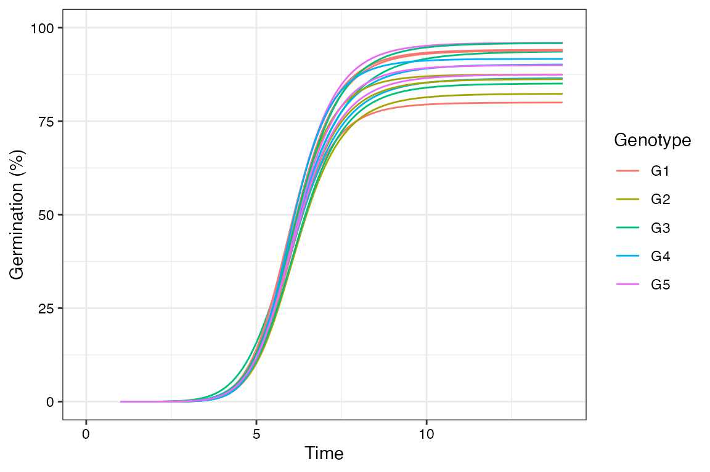
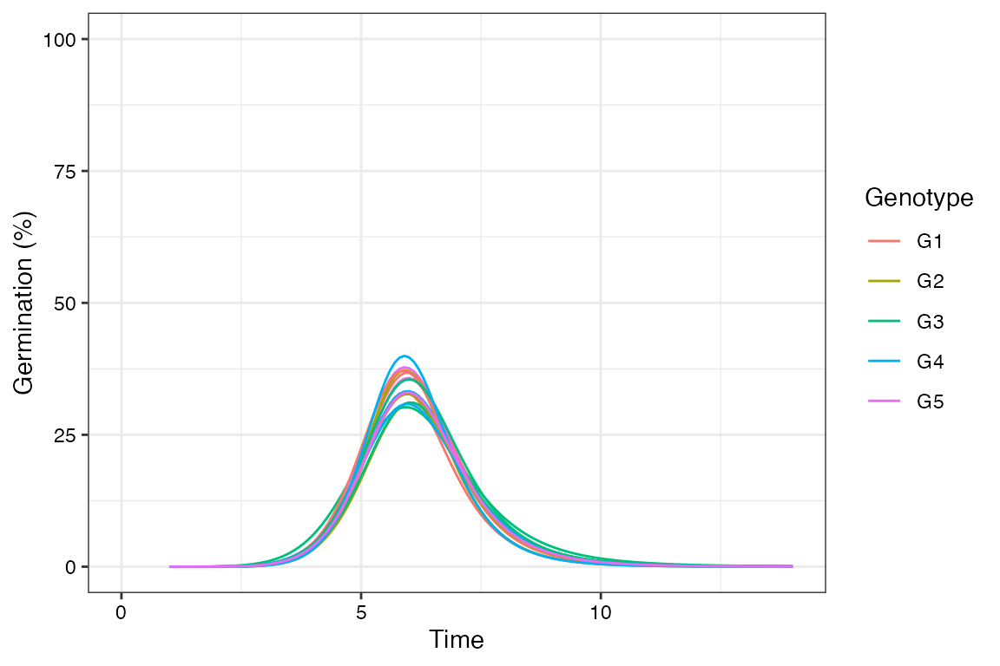
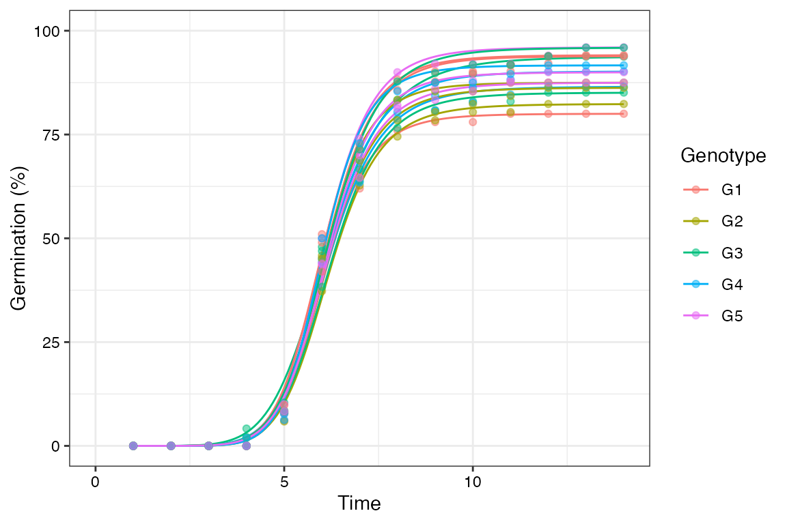
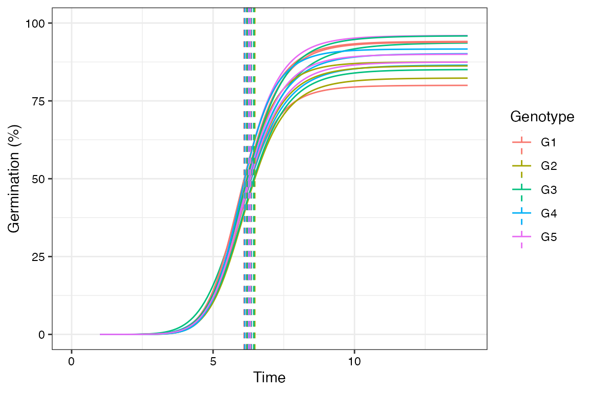
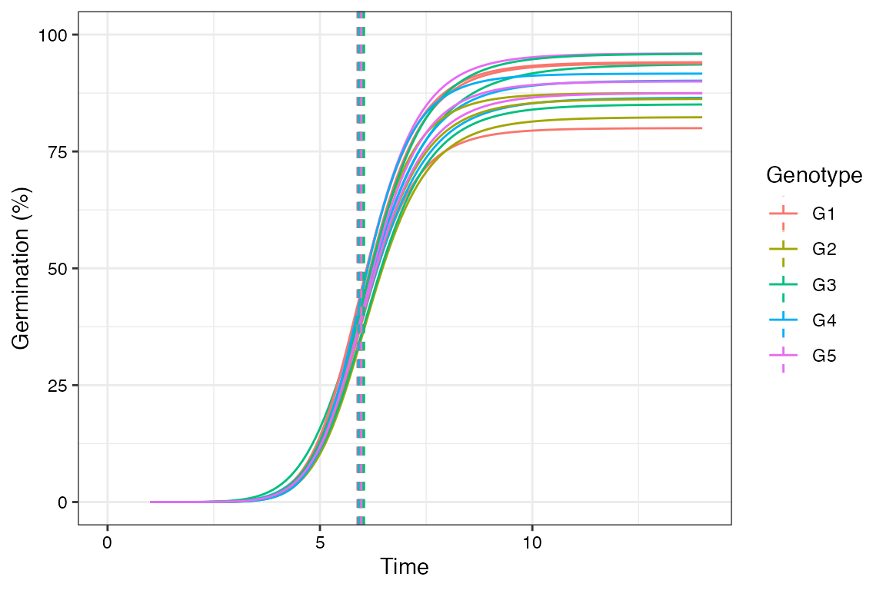
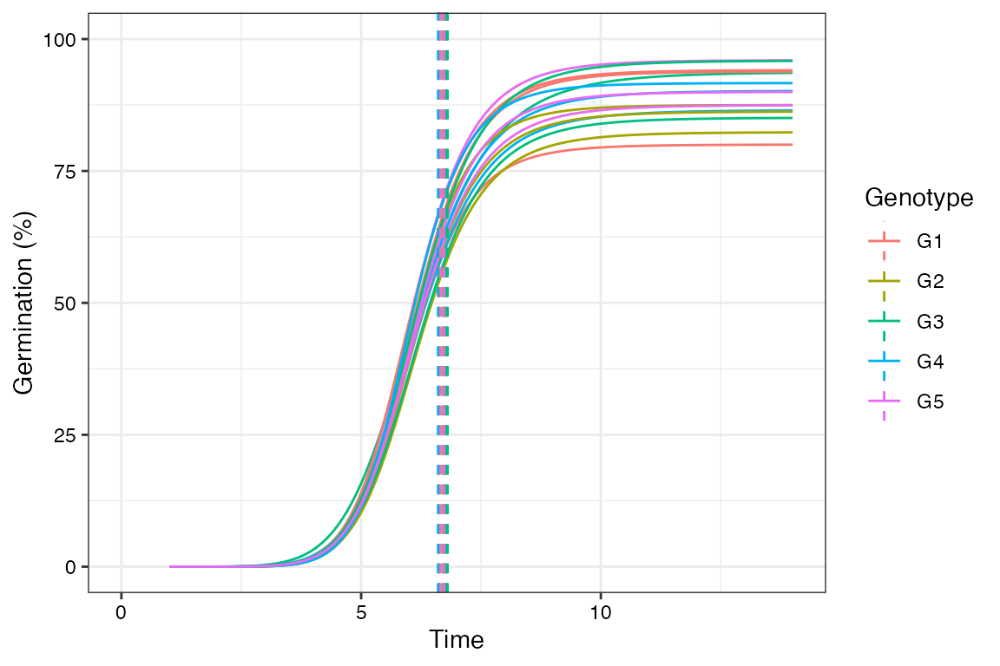

The ammistability Package: A Brief
Introduction
Ajay, B. C.1, Aravind, J.2, and Abdul Fiyaz, R.3
2022-07-16
Source:vignettes/Introduction.Rmd
Introduction.Rmd
- RRS, ICAR-Directorate of Groundnut Research, Anantapur.
- ICAR-National Bureau of Plant Genetic Resources, New Delhi.
- ICAR-Indian Institute of Rice Research, Hyderabad.

Overview
The package ammistability (Ajay et al.,
2019a) is a collection of functions for the computation of
various stability parameters from the results of Additive Main Effects
and Multiplicative Interaction (AMMI) analysis computed by the AMMI
function of agricolae
package.
The goal of this vignette is to introduce the users to these
functions and give a primer in computation of various stability
parameters/indices from a fitted AMMI model. This document assumes a
basic knowledge of R programming language.
Installation
The package can be installed from CRAN as follows:
# Install from CRAN
install.packages('ammistability', dependencies=TRUE)The development version can be installed from github as follows:
# Install development version from Github
devtools::install_github("ajaygpb/ammistability")Then the package can be loaded using the function
--------------------------------------------------------------------------------
Welcome to ammistability version 0.1.3
# To know how to use this package type:
browseVignettes(package = 'ammistability')
for the package vignette.
# To know whats new in this version type:
news(package='ammistability')
for the NEWS file.
# To cite the methods in the package type:
citation(package='ammistability')
# To suppress this message use:
suppressPackageStartupMessages(library(ammistability))
--------------------------------------------------------------------------------Version History
The current version of the package is 0.1.3. The previous versions are as follows.
Table 1. Version history of
ammistability R package.
| Version | Date |
|---|---|
| 0.1.0 | 2018-08-13 |
| 0.1.1 | 2018-12-07 |
| 0.1.2 | 2021-02-23 |
To know detailed history of changes use
news(package='ammistability').
AMMI model
The difference in response of genotypes to different environmental conditions is known as Genotype-Environment Interaction (GEI). Understanding the nature and structure of this interaction is critical for plant breeders to select for genotypes with wide or specific adaptability. One of the most popular techniques to achieve this is by fitting the Additive Main Effects and Multiplicative Interaction (AMMI) model to the results of multi environment trials (Gauch, 1988, 1992).
The AMMI equation is described as follows.
\[Y_{ij} = \mu + \alpha_{i} + \beta_{j} + \sum_{n=1}^{N}\lambda_{n}\gamma_{in}\delta_{jn} + \rho_{ij}\]
Where, \(Y_{ij}\) is the yield of the \(i\)th genotype in the \(j\)th environment, \(\mu\) is the grand mean, \(\alpha_{i}\) is the genotype deviation from the grand mean, \(\beta_{j}\) is the environment deviation, \(N\) is the total number of interaction principal components (IPCs), \(\lambda_{n}\) is the is the singular value for \(n\)th IPC and correspondingly \(\lambda_{n}^{2}\) is its eigen value, \(\gamma_{in}\) is the eigenvector value for \(i\)th genotype, \(\delta_{jn}\) is the eigenvector value for the \(j\)th environment and \(\rho_{ij}\) is the residual.
AMMI stability parameters
Although the AMMI model can aid in determining genotypes with wide or specific adaptability, it fails to rank genotypes according to their stability. Several measures have been developed over the years to indicate the stability of genotypes from the results of AMMI analysis (Table 1.).
The details about AMMI stability parameters/indices implemented in
ammistability are described in Table 1.
Table 1 : AMMI stability parameters/indices
implemented in ammistability.
| AMMI stability parameter | function | Details | Reference |
|---|---|---|---|
| Sum across environments of GEI modelled by AMMI (\(AMGE\)) | AMGE.AMMI |
\[AMGE = \sum_{j=1}^{E} \sum_{n=1}^{N'} \lambda_{n} \gamma_{in} \delta_{jn}\] | Sneller et al. (1997) |
| AMMI Stability Index (\(ASI\)) |
ASI.AMMI and MASI.AMMI
|
\[ASI = \sqrt{\left [ PC_{1}^{2} \times \theta_{1}^{2} \right ]+\left [ PC_{2}^{2} \times \theta_{2}^{2} \right ]}\] | Jambhulkar et al. (2014); Jambhulkar et al. (2015); Jambhulkar et al. (2017) |
| AMMI Based Stability Parameter (\(ASTAB\)) | ASTAB.AMMI |
\[ASTAB = \sum_{n=1}^{N'}\lambda_{n}\gamma_{in}^{2}\] | Rao and Prabhakaran (2005) |
| AMMI stability value (\(ASV\)) * |
agricolae::index.AMMI and
MASV.AMMI
|
Distance from the coordinate point to the origin in a
two dimensional scattergram generated by plotting of IPC1 score against
IPC2 score. \[ASV = \sqrt{\left (\frac{SSIPC_{1}}{SSIPC_{2}}\times PC_{1} \right )^2 + \left (PC_{2} \right )^2} \] |
Purchase (1997); Purchase et al. (1999); Purchase et al. (2000) |
| \(AV_{(AMGE)}\) | AVAMGE.AMMI |
\[AV_{(AMGE)} = \sum_{j=1}^{E} \sum_{n=1}^{N'} \left |\lambda_{n} \gamma_{in} \delta_{jn} \right |\] | Zali et al. (2012) |
| Annicchiaricoâs D parameter (\(D_{a}\)) | DA.AMMI |
The unsquared Euclidean distance from the origin of
significant IPC axes in the AMMI model. \[D_{a} = \sqrt{\sum_{n=1}^{N'}(\lambda_{n}\gamma_{in})^2}\] |
Annicchiarico (1997) |
| Zhangâs D parameter or AMMI statistic coefficient or AMMI distance or AMMI stability index (\(D_{z}\)) | DZ.AMMI |
The distance of IPC point from origin in space. \[D_{z} = \sqrt{\sum_{n=1}^{N'}\gamma_{in}^{2}}\] |
Zhang et al. (1998) |
| Averages of the squared eigenvector values \(EV\) | EV.AMMI |
\[EV = \sum_{n=1}^{N'}\frac{\gamma_{in}^2}{N'}\] | Zobel (1994) |
| Stability measure based on fitted AMMI model \(FA\) | FA.AMMI |
\[FA = \sum_{n=1}^{N'}\lambda_{n}^{2}\gamma_{in}^{2}\] | Raju (2002); Zali et al. (2012) |
| \(FP\) | FA.AMMI |
Equivalent to \(FA\),
when only the first IPC axis is considered for computation. \[FP = \lambda_{1}^{2}\gamma_{i1}^{2}\] As \(\lambda_{1}^{2}\) will be same for all the genotypes, the absolute value of \(\gamma_{i1}\) alone is sufficient for comparison. So this is also equivalent to the comparison based on biplot with first IPC axis. |
Raju (2002); Zali et al. (2012) |
| \(B\) | FA.AMMI |
Equivalent to \(FA\),
when only the first two IPC axes are considered for computation. \[B = \sum_{n=1}^{2}\lambda_{n}^{2}\gamma_{in}^{2}\] Stability comparisons based on this measure will be equivalent to the comparisons based on biplot with first two IPC axes. |
Raju (2002); Zali et al. (2012) |
| \(W_{(AMMI)}\) | FA.AMMI |
Equivalent to \(FA\),
when all the IPC axes in the AMMI model are considered for
computation. \[W_{(AMMI)} = \sum_{n=1}^{N}\lambda_{n}^{2}\gamma_{in}^{2}\] Equivalent to Wrickeâs ecovalence. |
Wricke (1962); Raju (2002); Zali et al. (2012) |
| Modified AMMI Stability Index (\(MASI\)) | MASI.AMMI |
\[MASI = \sqrt{ \sum_{n=1}^{N'} PC_{n}^{2} \times \theta_{n}^{2}}\] | Ajay et al. (2018) |
| Modified AMMI stability value (\(MASV\)) | MASV.AMMI |
\[MASV = \sqrt{\sum_{n=1}^{N'-1}\left (\frac{SSIPC_{n}}{SSIPC_{n+1}} \times PC_{n} \right )^2 + \left (PC_{N'} \right )^2} \] | Ajay et al. (2019b); Zali et al. (2012) |
| Sums of the absolute value of the IPC scores (\(SIPC\)) | SIPC.AMMI |
\[SIPC = \sum_{n=1}^{N'}
\left |
\lambda_{n}^{0.5}\gamma_{in} \right |\] \[SIPC = \sum_{n=1}^{N'}\left | PC_{n} \right |\] |
Sneller et al. (1997) |
| Absolute value of the relative contribution of IPCs to the interaction (\(Za\)) | ZA.AMMI |
\[Za = \sum_{i=1}^{N'}\left | \theta_{n}\gamma_{in} \right |\] | Zali et al. (2012) |
Where, \(N\) is the total number of interaction principal components (IPCs); \(N'\) is the number of significant IPCAs (number of IPC that were retained in the AMMI model via F tests); \(\lambda_{n}\) is the is the singular value for \(n\)th IPC and correspondingly \(\lambda_{n}^{2}\) is its eigen value; \(\gamma_{in}\) is the eigenvector value for \(i\)th genotype; \(\delta_{jn}\) is the eigenvector value for the \(j\)th environment; \(SSIPC_{1}\), \(SSIPC_{2}\), \(\cdots\), \(SSIPC_{n}\) are the sum of squares of the 1st, 2th, â¦, and \(n\)th IPC; \(PC_{1}\), \(PC_{2}\), \(\cdots\), \(PC_{n}\) are the scores of 1st, 2th, â¦, and \(n\)th IPC; \(\theta_{n}\) is the percentage sum of squares explained by \(n\)th principal component interaction effect; and \(E\) is the number of environments.
AMMI model from agricolae::AMMI
library(agricolae)
data(plrv)
# AMMI model
model <- with(plrv, AMMI(Locality, Genotype, Rep, Yield, console = FALSE))
# ANOVA
model$ANOVAAnalysis of Variance Table
Response: Y
Df Sum Sq Mean Sq F value Pr(>F)
ENV 5 122284 24456.9 257.0382 9.08e-12 ***
REP(ENV) 12 1142 95.1 2.5694 0.002889 **
GEN 27 17533 649.4 17.5359 < 2.2e-16 ***
ENV:GEN 135 23762 176.0 4.7531 < 2.2e-16 ***
Residuals 324 11998 37.0
---
Signif. codes: 0 '***' 0.001 '**' 0.01 '*' 0.05 '.' 0.1 ' ' 1
# IPC F test
model$analysis percent acum Df Sum.Sq Mean.Sq F.value Pr.F
PC1 56.3 56.3 31 13368.5954 431.24501 11.65 0.0000
PC2 27.1 83.3 29 6427.5799 221.64069 5.99 0.0000
PC3 9.4 92.7 27 2241.9398 83.03481 2.24 0.0005
PC4 4.3 97.1 25 1027.5785 41.10314 1.11 0.3286
PC5 2.9 100.0 23 696.1012 30.26527 0.82 0.7059
# Mean yield and IPC scores
model$biplot type Yield PC1 PC2 PC3 PC4
102.18 GEN 26.31947 -1.50828851 1.258765244 -0.19220309 0.48738861
104.22 GEN 31.28887 0.32517729 -1.297024517 -0.63695749 -0.44159957
121.31 GEN 30.10174 0.95604605 1.143461054 -1.28777348 2.22246913
141.28 GEN 39.75624 2.11153737 0.817810467 1.45527701 0.25257620
157.26 GEN 36.95181 1.05139017 2.461179974 -1.97208942 -1.96538800
163.9 GEN 21.41747 -2.12407441 -0.284381234 -0.21791137 -0.50743629
221.19 GEN 22.98480 -0.84981828 0.347983673 -0.82400783 -0.11451944
233.11 GEN 28.66655 0.07554203 -1.046497338 1.04040485 0.22868362
235.6 GEN 38.63477 1.20102029 -2.816581184 0.80975361 1.02013062
241.2 GEN 26.34039 -0.79948495 0.220768053 -0.98538801 0.30004421
255.7 GEN 30.58975 -1.49543817 -1.186549449 0.92552519 -0.32009239
314.12 GEN 28.17335 1.39335380 -0.332786322 -0.73226877 0.05987348
317.6 GEN 35.32583 1.05170769 0.002555823 -0.81561907 0.58180433
319.20 GEN 38.75767 3.08338144 1.995946966 0.87971668 -1.11908943
320.16 GEN 26.34808 -1.55737097 0.732314249 -0.41432567 1.32097009
342.15 GEN 26.01336 -1.35880873 -0.741980068 0.87480105 -1.12013125
346.2 GEN 23.84175 -2.48453928 -0.397045286 1.07091711 -0.90974484
351.26 GEN 36.11581 1.22670345 1.537183139 1.79835728 -0.03516368
364.21 GEN 34.05974 0.27328985 -0.447941156 0.03139543 0.77920500
402.7 GEN 27.47748 -0.12907269 -0.080086669 0.01934016 -0.36085862
405.2 GEN 28.98663 -1.90936369 0.309047963 0.57682642 0.51163370
406.12 GEN 32.68323 0.90781100 -1.733433781 -0.24223050 -0.38596144
427.7 GEN 36.19020 0.42791957 -0.723190970 -0.85381724 -0.53089914
450.3 GEN 36.19602 1.38026196 1.279525147 0.16025163 0.61270137
506.2 GEN 33.26623 -0.33054261 -0.302588536 -1.58471588 -0.04659416
Canchan GEN 27.00126 1.47802905 0.380553178 1.67423900 0.07718375
Desiree GEN 16.15569 -3.64968796 1.720025405 0.43761089 0.04648011
Unica GEN 39.10400 1.25331924 -2.817033826 -0.99510845 -0.64366599
Ayac ENV 23.70254 -2.29611851 0.966037760 1.95959116 2.75548057
Hyo-02 ENV 45.73082 3.85283195 -5.093371615 1.16967118 -0.08985538
LM-02 ENV 34.64462 -1.14575146 -0.881093222 -4.56547274 0.55159099
LM-03 ENV 53.83493 5.34625518 4.265275487 -0.14143931 -0.11714533
SR-02 ENV 14.95128 -2.58678337 0.660309540 0.89096920 -3.25055305
SR-03 ENV 11.15328 -3.17043379 0.082842050 0.68668051 0.15048221
PC5
102.18 -0.04364115
104.22 0.95312506
121.31 -1.30661916
141.28 -0.25996142
157.26 -0.59719268
163.9 0.18563390
221.19 -0.57504816
233.11 0.65754266
235.6 -0.40273415
241.2 0.07555258
255.7 -0.46344763
314.12 0.54406154
317.6 0.39627052
319.20 0.29657050
320.16 2.29506737
342.15 -0.10776433
346.2 -0.12738693
351.26 0.30191335
364.21 -0.95811256
402.7 -0.28473777
405.2 -0.34397623
406.12 -0.49796296
427.7 1.00677993
450.3 -0.34325251
506.2 0.87807441
Canchan 0.49381313
Desiree -0.86767477
Unica -0.90489253
Ayac 1.67177210
Hyo-02 0.01540152
LM-02 0.52350416
LM-03 -0.40285728
SR-02 1.37283488
SR-03 -3.18065538
# G*E matrix (deviations from mean)
array(model$genXenv, dim(model$genXenv), dimnames(model$genXenv)) ENV
GEN Ayac Hyo-02 LM-02 LM-03 SR-02
102.18 5.5726162 -12.4918224 1.7425251 -2.7070438 2.91734869
104.22 -2.8712076 7.1684102 3.9336218 -4.0358373 0.47881580
121.31 0.3255230 -3.8666836 4.3182811 10.4366135 -11.88343843
141.28 -0.9451837 5.6454825 -9.7806639 14.6463104 -4.80337115
157.26 -10.3149711 -10.6241677 4.2336365 16.8683612 2.71710210
163.9 3.0874931 -6.9416721 3.4963790 -12.5533271 7.01688164
221.19 -0.6041752 -6.0090018 4.0648518 -2.6974743 1.27671246
233.11 2.5837535 6.8277609 -3.4440645 -4.4985717 0.19989490
235.6 -1.7541523 19.8225025 -2.2394463 -5.6643239 -8.11400542
241.2 1.0710975 -5.3831118 5.4253097 -3.2588271 0.46433086
255.7 2.4443155 1.3860497 -1.8857757 -12.9626594 4.31373929
314.12 -3.8812099 6.2098482 2.3577759 5.9071782 -3.92419060
317.6 -1.7450319 3.0388540 3.0448064 5.5211634 -4.79271565
319.20 -6.0155949 2.8477540 -9.7697504 24.8850017 -1.82949467
320.16 10.9481796 -10.2982108 4.9608280 -6.2233088 2.99984918
342.15 0.8508002 -0.3338618 -2.4575390 -10.3783871 7.29753151
346.2 4.7000495 -6.2178087 -2.2612391 -14.9700672 9.90123888
351.26 2.6002030 -0.9918665 -10.8315931 12.7429121 -0.02713985
364.21 -0.4533734 3.2864208 -0.1335527 -0.1592533 -4.82292664
402.7 -1.2134573 -0.0387229 -0.2179557 -0.8774011 1.08032472
405.2 6.6477681 -8.3071271 -0.6159895 -8.8927189 3.52179705
406.12 -6.1296667 12.0703469 1.1195092 -2.2601009 -3.13776595
427.7 -3.1340922 4.3967072 4.2792028 -1.0194744 0.76266844
450.3 -0.5047010 -1.0720791 -3.2821761 12.8806007 -5.04562407
506.2 -1.2991912 -1.5682154 8.3142802 -3.1819279 0.60021498
Canchan 1.2929442 5.7152780 -9.3713622 9.0803035 -1.65332869
Desiree 9.5767845 -22.3280421 0.2396387 -11.8935722 9.62433886
Unica -10.8355195 18.0569790 4.7604622 -4.7341684 -5.13878822
ENV
GEN SR-03
102.18 4.9663762
104.22 -4.6738028
121.31 0.6697043
141.28 -4.7625741
157.26 -2.8799609
163.9 5.8942454
221.19 3.9690870
233.11 -1.6687730
235.6 -2.0505746
241.2 1.6812008
255.7 6.7043306
314.12 -6.6694018
317.6 -5.0670763
319.20 -10.1179157
320.16 -2.3873373
342.15 5.0214562
346.2 8.8478267
351.26 -3.4925156
364.21 2.2826853
402.7 1.2672123
405.2 7.6462704
406.12 -1.6623226
427.7 -5.2850119
450.3 -2.9760204
506.2 -2.8651608
Canchan -5.0638348
Desiree 14.7808522
Unica -2.1089651
AMGE.AMMI()
# With default n (N') and default ssi.method (farshadfar)
AMGE.AMMI(model) AMGE SSI rAMGE rY means
102.18 1.598721e-14 48 25 23 26.31947
104.22 -8.881784e-15 20 7 13 31.28887
121.31 1.643130e-14 41 26 15 30.10174
141.28 -4.440892e-15 11 10 1 39.75624
157.26 3.241851e-14 33 28 5 36.95181
163.9 3.108624e-15 45 18 27 21.41747
221.19 8.881784e-15 48 22 26 22.98480
233.11 -1.476597e-14 22 5 17 28.66655
235.6 -2.975398e-14 5 1 4 38.63477
241.2 7.105427e-15 42 20 22 26.34039
255.7 -1.598721e-14 18 4 14 30.58975
314.12 -1.776357e-15 31 13 18 28.17335
317.6 1.776357e-15 26 17 9 35.32583
319.20 8.437695e-15 24 21 3 38.75767
320.16 1.154632e-14 45 24 21 26.34808
342.15 -9.325873e-15 30 6 24 26.01336
346.2 -3.552714e-15 36 11 25 23.84175
351.26 1.110223e-15 24 16 8 36.11581
364.21 -4.940492e-15 19 9 10 34.05974
402.7 -4.163336e-16 33 14 19 27.47748
405.2 8.881784e-16 31 15 16 28.98663
406.12 -1.731948e-14 15 3 12 32.68323
427.7 -2.553513e-15 19 12 7 36.19020
450.3 1.021405e-14 29 23 6 36.19602
506.2 6.439294e-15 30 19 11 33.26623
Canchan -7.993606e-15 28 8 20 27.00126
Desiree 1.754152e-14 55 27 28 16.15569
Unica -2.042810e-14 4 2 2 39.10400
# With n = 4 and default ssi.method (farshadfar)
AMGE.AMMI(model, n = 4) AMGE SSI rAMGE rY means
102.18 1.643130e-14 48.0 25.0 23 26.31947
104.22 -9.325873e-15 20.0 7.0 13 31.28887
121.31 1.731948e-14 41.0 26.0 15 30.10174
141.28 -4.218847e-15 11.5 10.5 1 39.75624
157.26 3.019807e-14 33.0 28.0 5 36.95181
163.9 2.664535e-15 45.0 18.0 27 21.41747
221.19 8.271162e-15 48.0 22.0 26 22.98480
233.11 -1.409983e-14 22.0 5.0 17 28.66655
235.6 -2.797762e-14 5.0 1.0 4 38.63477
241.2 6.883383e-15 42.0 20.0 22 26.34039
255.7 -1.709743e-14 18.0 4.0 14 30.58975
314.12 -2.664535e-15 31.0 13.0 18 28.17335
317.6 2.220446e-15 26.0 17.0 9 35.32583
319.20 7.549517e-15 24.0 21.0 3 38.75767
320.16 1.243450e-14 45.0 24.0 21 26.34808
342.15 -1.132427e-14 30.0 6.0 24 26.01336
346.2 -4.440892e-15 34.0 9.0 25 23.84175
351.26 1.110223e-15 23.0 15.0 8 36.11581
364.21 -3.774758e-15 22.0 12.0 10 34.05974
402.7 -9.159340e-16 33.0 14.0 19 27.47748
405.2 1.165734e-15 32.0 16.0 16 28.98663
406.12 -1.820766e-14 15.0 3.0 12 32.68323
427.7 -4.218847e-15 17.5 10.5 7 36.19020
450.3 9.992007e-15 29.0 23.0 6 36.19602
506.2 6.522560e-15 30.0 19.0 11 33.26623
Canchan -6.994405e-15 28.0 8.0 20 27.00126
Desiree 1.743050e-14 55.0 27.0 28 16.15569
Unica -2.220446e-14 4.0 2.0 2 39.10400
# With default n (N') and ssi.method = "rao"
AMGE.AMMI(model, ssi.method = "rao") AMGE SSI rAMGE rY means
102.18 1.598721e-14 -1.209920 25 23 26.31947
104.22 -8.881784e-15 4.742740 7 13 31.28887
121.31 1.643130e-14 -1.030703 26 15 30.10174
141.28 -4.440892e-15 8.741371 10 1 39.75624
157.26 3.241851e-14 0.184960 28 5 36.95181
163.9 3.108624e-15 -9.937521 18 27 21.41747
221.19 8.881784e-15 -2.973115 22 26 22.98480
233.11 -1.476597e-14 3.173817 5 17 28.66655
235.6 -2.975398e-14 2.370918 1 4 38.63477
241.2 7.105427e-15 -3.794340 20 22 26.34039
255.7 -1.598721e-14 3.065479 4 14 30.58975
314.12 -1.776357e-15 19.531348 13 18 28.17335
317.6 1.776357e-15 -17.460918 17 9 35.32583
319.20 8.437695e-15 -2.654754 21 3 38.75767
320.16 1.154632e-14 -2.004403 24 21 26.34808
342.15 -9.325873e-15 4.393465 6 24 26.01336
346.2 -3.552714e-15 10.083744 11 25 23.84175
351.26 1.110223e-15 -28.602804 16 8 36.11581
364.21 -4.940492e-15 7.802759 9 10 34.05974
402.7 -4.163336e-16 80.310270 14 19 27.47748
405.2 8.881784e-16 -36.280350 15 16 28.98663
406.12 -1.731948e-14 2.974655 3 12 32.68323
427.7 -2.553513e-15 14.127995 12 7 36.19020
450.3 1.021405e-14 -2.056805 23 6 36.19602
506.2 6.439294e-15 -4.049883 19 11 33.26623
Canchan -7.993606e-15 5.016556 8 20 27.00126
Desiree 1.754152e-14 -1.358068 27 28 16.15569
Unica -2.042810e-14 2.893508 2 2 39.10400
# Changing the ratio of weights for Rao's SSI
AMGE.AMMI(model, ssi.method = "rao", a = 0.43) AMGE SSI rAMGE rY means
102.18 1.598721e-14 -0.03111319 25 23 26.31947
104.22 -8.881784e-15 2.62088777 7 13 31.28887
121.31 1.643130e-14 0.11624442 26 15 30.10174
141.28 -4.440892e-15 4.49766702 10 1 39.75624
157.26 3.241851e-14 0.76628938 28 5 36.95181
163.9 3.108624e-15 -3.87508635 18 27 21.41747
221.19 8.881784e-15 -0.85126241 22 26 22.98480
233.11 -1.476597e-14 1.89751451 5 17 28.66655
235.6 -2.975398e-14 1.73752955 1 4 38.63477
241.2 7.105427e-15 -1.14202521 20 22 26.34039
255.7 -1.598721e-14 1.88667228 4 14 30.58975
314.12 -1.776357e-15 8.92208663 13 18 28.17335
317.6 1.776357e-15 -6.85165762 17 9 35.32583
319.20 8.437695e-15 -0.42122552 21 3 38.75767
320.16 1.154632e-14 -0.37220928 24 21 26.34808
342.15 -9.325873e-15 2.37265314 6 24 26.01336
346.2 -3.552714e-15 4.77911338 11 25 23.84175
351.26 1.110223e-15 -11.62798636 16 8 36.11581
364.21 -4.940492e-15 3.98819325 9 10 34.05974
402.7 -4.163336e-16 35.04409044 14 19 27.47748
405.2 8.881784e-16 -15.06182868 15 16 28.98663
406.12 -1.731948e-14 1.88652568 3 12 32.68323
427.7 -2.553513e-15 6.74763968 12 7 36.19020
450.3 1.021405e-14 -0.21171610 23 6 36.19602
506.2 6.439294e-15 -1.12319038 19 11 33.26623
Canchan -7.993606e-15 2.65894277 8 20 27.00126
Desiree 1.754152e-14 -0.28371280 27 28 16.15569
Unica -2.042810e-14 1.97096400 2 2 39.10400
ASI.AMMI()
# With default ssi.method (farshadfar)
ASI.AMMI(model) ASI SSI rASI rY means
102.18 0.91512303 43 20 23 26.31947
104.22 0.39631322 19 6 13 31.28887
121.31 0.62108102 25 10 15 30.10174
141.28 1.20927797 26 25 1 39.75624
157.26 0.89176583 22 17 5 36.95181
163.9 1.19833464 51 24 27 21.41747
221.19 0.48765291 34 8 26 22.98480
233.11 0.28677206 21 4 17 28.66655
235.6 1.01971997 25 21 4 38.63477
241.2 0.45406877 29 7 22 26.34039
255.7 0.90124720 33 19 14 30.58975
314.12 0.78962523 30 12 18 28.17335
317.6 0.59211183 18 9 9 35.32583
319.20 1.81826161 30 27 3 38.75767
320.16 0.89897900 39 18 21 26.34808
342.15 0.79099371 37 13 24 26.01336
346.2 1.40292793 51 26 25 23.84175
351.26 0.80654291 22 14 8 36.11581
364.21 0.19598368 12 2 10 34.05974
402.7 0.07583976 20 1 19 27.47748
405.2 1.07822942 39 23 16 28.98663
406.12 0.69418710 23 11 12 32.68323
427.7 0.31056699 12 5 7 36.19020
450.3 0.85094150 22 16 6 36.19602
506.2 0.20336120 14 3 11 33.26623
Canchan 0.83849670 35 15 20 27.00126
Desiree 2.10698168 56 28 28 16.15569
Unica 1.03956820 24 22 2 39.10400
# With ssi.method = "rao"
ASI.AMMI(model, ssi.method = "rao") ASI SSI rASI rY means
102.18 0.91512303 1.3832387 20 23 26.31947
104.22 0.39631322 2.2326416 6 13 31.28887
121.31 0.62108102 1.7551519 10 15 30.10174
141.28 1.20927797 1.6936286 25 1 39.75624
157.26 0.89176583 1.7436656 17 5 36.95181
163.9 1.19833464 1.0993106 24 27 21.41747
221.19 0.48765291 1.7347850 8 26 22.98480
233.11 0.28677206 2.6102708 4 17 28.66655
235.6 1.01971997 1.7309273 21 4 38.63477
241.2 0.45406877 1.9170753 7 22 26.34039
255.7 0.90124720 1.5305578 19 14 30.58975
314.12 0.78962523 1.5271379 12 18 28.17335
317.6 0.59211183 1.9633384 9 9 35.32583
319.20 1.81826161 1.5279859 27 3 38.75767
320.16 0.89897900 1.3936010 18 21 26.34808
342.15 0.79099371 1.4556573 13 24 26.01336
346.2 1.40292793 1.1198795 26 25 23.84175
351.26 0.80654291 1.7733422 14 8 36.11581
364.21 0.19598368 3.5623227 2 10 34.05974
402.7 0.07583976 7.2317748 1 19 27.47748
405.2 1.07822942 1.3907733 23 16 28.98663
406.12 0.69418710 1.7578467 11 12 32.68323
427.7 0.31056699 2.7272047 5 7 36.19020
450.3 0.85094150 1.7448731 16 6 36.19602
506.2 0.20336120 3.4475042 3 11 33.26623
Canchan 0.83849670 1.4534532 15 20 27.00126
Desiree 2.10698168 0.7548219 28 28 16.15569
Unica 1.03956820 1.7372299 22 2 39.10400
# Changing the ratio of weights for Rao's SSI
ASI.AMMI(model, ssi.method = "rao", a = 0.43) ASI SSI rASI rY means
102.18 0.91512303 1.0839450 20 23 26.31947
104.22 0.39631322 1.5415455 6 13 31.28887
121.31 0.62108102 1.3141619 10 15 30.10174
141.28 1.20927797 1.4671376 25 1 39.75624
157.26 0.89176583 1.4365328 17 5 36.95181
163.9 1.19833464 0.8707513 24 27 21.41747
221.19 0.48765291 1.1731344 8 26 22.98480
233.11 0.28677206 1.6551898 4 17 28.66655
235.6 1.01971997 1.4623334 21 4 38.63477
241.2 0.45406877 1.3138836 7 22 26.34039
255.7 0.90124720 1.2266562 19 14 30.58975
314.12 0.78962523 1.1802765 12 18 28.17335
317.6 0.59211183 1.5007728 9 9 35.32583
319.20 1.81826161 1.3773527 27 3 38.75767
320.16 0.89897900 1.0889326 18 21 26.34808
342.15 0.79099371 1.1093959 13 24 26.01336
346.2 1.40292793 0.9246517 26 25 23.84175
351.26 0.80654291 1.4337564 14 8 36.11581
364.21 0.19598368 2.1648057 2 10 34.05974
402.7 0.07583976 3.6203374 1 19 27.47748
405.2 1.07822942 1.1367545 23 16 28.98663
406.12 0.69418710 1.3632981 11 12 32.68323
427.7 0.31056699 1.8452998 5 7 36.19020
450.3 0.85094150 1.4230055 16 6 36.19602
506.2 0.20336120 2.1006861 3 11 33.26623
Canchan 0.83849670 1.1268084 15 20 27.00126
Desiree 2.10698168 0.6248300 28 28 16.15569
Unica 1.03956820 1.4737642 22 2 39.10400
ASTAB.AMMI()
# With default n (N') and default ssi.method (farshadfar)
ASTAB.AMMI(model) ASTAB SSI rASTAB rY means
102.18 3.89636621 39 16 23 26.31947
104.22 2.19372771 21 8 13 31.28887
121.31 3.87988776 29 14 15 30.10174
141.28 7.24523520 23 22 1 39.75624
157.26 11.05196482 31 26 5 36.95181
163.9 4.64005014 46 19 27 21.41747
221.19 1.52227265 30 4 26 22.98480
233.11 2.18330553 24 7 17 28.66655
235.6 10.03128021 28 24 4 38.63477
241.2 1.65890425 27 5 22 26.34039
255.7 4.50083178 32 18 14 30.58975
314.12 2.58839912 27 9 18 28.17335
317.6 1.77133006 15 6 9 35.32583
319.20 14.26494686 30 27 3 38.75767
320.16 3.13335427 32 11 21 26.34808
342.15 3.16217247 36 12 24 26.01336
346.2 7.47744386 48 23 25 23.84175
351.26 7.10182225 29 21 8 36.11581
364.21 0.27632429 12 2 10 34.05974
402.7 0.02344768 20 1 19 27.47748
405.2 4.07390905 33 17 16 28.98663
406.12 3.88758910 27 15 12 32.68323
427.7 1.43512423 10 3 7 36.19020
450.3 3.56798827 19 13 6 36.19602
506.2 2.71214267 21 10 11 33.26623
Canchan 5.13246683 40 20 20 27.00126
Desiree 16.47021287 56 28 28 16.15569
Unica 10.49672952 27 25 2 39.10400
# With n = 4 and default ssi.method (farshadfar)
ASTAB.AMMI(model, n = 4) ASTAB SSI rASTAB rY means
102.18 4.1339139 36 13 23 26.31947
104.22 2.3887379 21 8 13 31.28887
121.31 8.8192568 38 23 15 30.10174
141.28 7.3090299 22 21 1 39.75624
157.26 14.9147148 31 26 5 36.95181
163.9 4.8975417 45 18 27 21.41747
221.19 1.5353874 29 3 26 22.98480
233.11 2.2356017 24 7 17 28.66655
235.6 11.0719467 29 25 4 38.63477
241.2 1.7489308 27 5 22 26.34039
255.7 4.6032909 30 16 14 30.58975
314.12 2.5919840 27 9 18 28.17335
317.6 2.1098263 15 6 9 35.32583
319.20 15.5173080 30 27 3 38.75767
320.16 4.8783163 38 17 21 26.34808
342.15 4.4168665 39 15 24 26.01336
346.2 8.3050795 47 22 25 23.84175
351.26 7.1030587 28 20 8 36.11581
364.21 0.8834847 12 2 10 34.05974
402.7 0.1536666 20 1 19 27.47748
405.2 4.3356781 30 14 16 28.98663
406.12 4.0365553 24 12 12 32.68323
427.7 1.7169781 11 4 7 36.19020
450.3 3.9433912 17 11 6 36.19602
506.2 2.7143137 21 10 11 33.26623
Canchan 5.1384242 39 19 20 27.00126
Desiree 16.4723733 56 28 28 16.15569
Unica 10.9110354 26 24 2 39.10400
# With default n (N') and ssi.method = "rao"
ASTAB.AMMI(model, ssi.method = "rao") ASTAB SSI rASTAB rY means
102.18 3.89636621 0.9916073 16 23 26.31947
104.22 2.19372771 1.2572096 8 13 31.28887
121.31 3.87988776 1.1154972 14 15 30.10174
141.28 7.24523520 1.3680406 22 1 39.75624
157.26 11.05196482 1.2518822 26 5 36.95181
163.9 4.64005014 0.8103867 19 27 21.41747
221.19 1.52227265 1.0909958 4 26 22.98480
233.11 2.18330553 1.1728390 7 17 28.66655
235.6 10.03128021 1.3115430 24 4 38.63477
241.2 1.65890425 1.1722749 5 22 26.34039
255.7 4.50083178 1.1129205 18 14 30.58975
314.12 2.58839912 1.1194868 9 18 28.17335
317.6 1.77133006 1.4453573 6 9 35.32583
319.20 14.26494686 1.3001667 27 3 38.75767
320.16 3.13335427 1.0250358 11 21 26.34808
342.15 3.16217247 1.0126098 12 24 26.01336
346.2 7.47744386 0.8469106 23 25 23.84175
351.26 7.10182225 1.2507915 21 8 36.11581
364.21 0.27632429 2.9922101 2 10 34.05974
402.7 0.02344768 23.0708927 1 19 27.47748
405.2 4.07390905 1.0727560 17 16 28.98663
406.12 3.88758910 1.1994027 15 12 32.68323
427.7 1.43512423 1.5423074 3 7 36.19020
450.3 3.56798827 1.3259199 13 6 36.19602
506.2 2.71214267 1.2763780 10 11 33.26623
Canchan 5.13246683 0.9816986 20 20 27.00126
Desiree 16.47021287 0.5583351 28 28 16.15569
Unica 10.49672952 1.3245441 25 2 39.10400
# Changing the ratio of weights for Rao's SSI
ASTAB.AMMI(model, ssi.method = "rao", a = 0.43) ASTAB SSI rASTAB rY means
102.18 3.89636621 0.9155436 16 23 26.31947
104.22 2.19372771 1.1221097 8 13 31.28887
121.31 3.87988776 1.0391104 14 15 30.10174
141.28 7.24523520 1.3271348 22 1 39.75624
157.26 11.05196482 1.2250659 26 5 36.95181
163.9 4.64005014 0.7465140 19 27 21.41747
221.19 1.52227265 0.8963051 4 26 22.98480
233.11 2.18330553 1.0370941 7 17 28.66655
235.6 10.03128021 1.2819982 24 4 38.63477
241.2 1.65890425 0.9936194 5 22 26.34039
255.7 4.50083178 1.0470721 18 14 30.58975
314.12 2.58839912 1.0049865 9 18 28.17335
317.6 1.77133006 1.2780410 6 9 35.32583
319.20 14.26494686 1.2793904 27 3 38.75767
320.16 3.13335427 0.9304495 11 21 26.34808
342.15 3.16217247 0.9188855 12 24 26.01336
346.2 7.47744386 0.8072751 23 25 23.84175
351.26 7.10182225 1.2090596 21 8 36.11581
364.21 0.27632429 1.9196572 2 10 34.05974
402.7 0.02344768 10.4311581 1 19 27.47748
405.2 4.07390905 1.0000071 17 16 28.98663
406.12 3.88758910 1.1231672 15 12 32.68323
427.7 1.43512423 1.3357940 3 7 36.19020
450.3 3.56798827 1.2428556 13 6 36.19602
506.2 2.71214267 1.1671018 10 11 33.26623
Canchan 5.13246683 0.9239540 20 20 27.00126
Desiree 16.47021287 0.5403407 28 28 16.15569
Unica 10.49672952 1.2963093 25 2 39.10400
AVAMGE.AMMI()
# With default n (N') and default ssi.method (farshadfar)
AVAMGE.AMMI(model) AVAMGE SSI rAVAMGE rY means
102.18 30.229771 40 17 23 26.31947
104.22 21.584579 21 8 13 31.28887
121.31 27.893984 28 13 15 30.10174
141.28 40.486706 24 23 1 39.75624
157.26 44.055803 29 24 5 36.95181
163.9 39.056228 48 21 27 21.41747
221.19 17.905975 33 7 26 22.98480
233.11 16.242635 21 4 17 28.66655
235.6 39.840739 26 22 4 38.63477
241.2 17.101113 28 6 22 26.34039
255.7 29.306918 29 15 14 30.58975
314.12 28.760304 32 14 18 28.17335
317.6 22.700856 18 9 9 35.32583
319.20 55.232023 30 27 3 38.75767
320.16 30.717681 40 19 21 26.34808
342.15 25.538281 34 10 24 26.01336
346.2 46.236590 50 25 25 23.84175
351.26 30.105573 24 16 8 36.11581
364.21 6.742386 12 2 10 34.05974
402.7 2.202291 20 1 19 27.47748
405.2 35.890684 36 20 16 28.98663
406.12 27.272847 24 12 12 32.68323
427.7 16.756971 12 5 7 36.19020
450.3 25.628188 17 11 6 36.19602
506.2 15.760611 14 3 11 33.26623
Canchan 30.515224 38 18 20 27.00126
Desiree 69.096357 56 28 28 16.15569
Unica 47.204593 28 26 2 39.10400
# With n = 4 and default ssi.method (farshadfar)
AVAMGE.AMMI(model, n = 4) AVAMGE SSI rAVAMGE rY means
102.18 30.431550 39 16 23 26.31947
104.22 21.176775 21 8 13 31.28887
121.31 34.844853 34 19 15 30.10174
141.28 40.382139 24 23 1 39.75624
157.26 49.421992 31 26 5 36.95181
163.9 38.846149 48 21 27 21.41747
221.19 17.858564 33 7 26 22.98480
233.11 17.449539 23 6 17 28.66655
235.6 39.657410 26 22 4 38.63477
241.2 17.225331 27 5 22 26.34039
255.7 29.585043 28 14 14 30.58975
314.12 28.801567 31 13 18 28.17335
317.6 23.101824 18 9 9 35.32583
319.20 55.695327 30 27 3 38.75767
320.16 31.566364 39 18 21 26.34808
342.15 26.310253 35 11 24 26.01336
346.2 46.863568 50 25 25 23.84175
351.26 29.920025 23 15 8 36.11581
364.21 9.635146 12 2 10 34.05974
402.7 3.665565 20 1 19 27.47748
405.2 35.538076 36 20 16 28.98663
406.12 26.916422 24 12 12 32.68323
427.7 16.266701 11 4 7 36.19020
450.3 25.622916 16 10 6 36.19602
506.2 15.709209 14 3 11 33.26623
Canchan 30.908627 37 17 20 27.00126
Desiree 69.115600 56 28 28 16.15569
Unica 46.610186 26 24 2 39.10400
# With default n (N') and ssi.method = "rao"
AVAMGE.AMMI(model, ssi.method = "rao") AVAMGE SSI rAVAMGE rY means
102.18 30.229771 1.4579240 17 23 26.31947
104.22 21.584579 1.8601746 8 13 31.28887
121.31 27.893984 1.6314700 13 15 30.10174
141.28 40.486706 1.7440938 23 1 39.75624
157.26 44.055803 1.6163747 24 5 36.95181
163.9 39.056228 1.1625489 21 27 21.41747
221.19 17.905975 1.7619814 7 26 22.98480
233.11 16.242635 2.0509293 4 17 28.66655
235.6 39.840739 1.7147885 22 4 38.63477
241.2 17.101113 1.9190480 6 22 26.34039
255.7 29.306918 1.6160450 15 14 30.58975
314.12 28.760304 1.5490150 14 18 28.17335
317.6 22.700856 1.9504975 9 9 35.32583
319.20 55.232023 1.5919808 27 3 38.75767
320.16 30.717681 1.4493304 19 21 26.34808
342.15 25.538281 1.5581219 10 24 26.01336
346.2 46.236590 1.1695027 25 25 23.84175
351.26 30.105573 1.7798138 16 8 36.11581
364.21 6.742386 3.7995961 2 10 34.05974
402.7 2.202291 9.1285592 1 19 27.47748
405.2 35.890684 1.4502899 20 16 28.98663
406.12 27.272847 1.7304443 12 12 32.68323
427.7 16.756971 2.2619806 5 7 36.19020
450.3 25.628188 1.8876432 11 6 36.19602
506.2 15.760611 2.2350438 3 11 33.26623
Canchan 30.515224 1.4745437 18 20 27.00126
Desiree 69.096357 0.7891628 28 28 16.15569
Unica 47.204593 1.6590963 26 2 39.10400
# Changing the ratio of weights for Rao's SSI
AVAMGE.AMMI(model, ssi.method = "rao", a = 0.43) AVAMGE SSI rAVAMGE rY means
102.18 30.229771 1.1160597 17 23 26.31947
104.22 21.584579 1.3813847 8 13 31.28887
121.31 27.893984 1.2609787 13 15 30.10174
141.28 40.486706 1.4888376 23 1 39.75624
157.26 44.055803 1.3817977 24 5 36.95181
163.9 39.056228 0.8979438 21 27 21.41747
221.19 17.905975 1.1848289 7 26 22.98480
233.11 16.242635 1.4146730 4 17 28.66655
235.6 39.840739 1.4553938 22 4 38.63477
241.2 17.101113 1.3147318 6 22 26.34039
255.7 29.306918 1.2634156 15 14 30.58975
314.12 28.760304 1.1896837 14 18 28.17335
317.6 22.700856 1.4952513 9 9 35.32583
319.20 55.232023 1.4048705 27 3 38.75767
320.16 30.717681 1.1128962 19 21 26.34808
342.15 25.538281 1.1534557 10 24 26.01336
346.2 46.236590 0.9459897 25 25 23.84175
351.26 30.105573 1.4365392 16 8 36.11581
364.21 6.742386 2.2668332 2 10 34.05974
402.7 2.202291 4.4359547 1 19 27.47748
405.2 35.890684 1.1623466 20 16 28.98663
406.12 27.272847 1.3515151 12 12 32.68323
427.7 16.756971 1.6452535 5 7 36.19020
450.3 25.628188 1.4843966 11 6 36.19602
506.2 15.760611 1.5793281 3 11 33.26623
Canchan 30.515224 1.1358773 18 20 27.00126
Desiree 69.096357 0.6395966 28 28 16.15569
Unica 47.204593 1.4401668 26 2 39.10400
DA.AMMI()
# With default n (N') and default ssi.method (farshadfar)
DA.AMMI(model) DA SSI rDA rY means
102.18 15.040431 39 16 23 26.31947
104.22 9.798867 22 9 13 31.28887
121.31 12.917859 26 11 15 30.10174
141.28 19.659222 23 22 1 39.75624
157.26 21.459064 29 24 5 36.95181
163.9 17.499098 48 21 27 21.41747
221.19 8.507426 31 5 26 22.98480
233.11 8.981297 24 7 17 28.66655
235.6 21.941275 29 25 4 38.63477
241.2 8.453875 26 4 22 26.34039
255.7 15.423064 32 18 14 30.58975
314.12 12.222308 28 10 18 28.17335
317.6 9.592839 17 8 9 35.32583
319.20 28.986374 30 27 3 38.75767
320.16 13.835583 34 13 21 26.34808
342.15 13.025230 36 12 24 26.01336
346.2 21.230207 48 23 25 23.84175
351.26 17.269543 28 20 8 36.11581
364.21 3.781576 12 2 10 34.05974
402.7 1.191312 20 1 19 27.47748
405.2 16.027557 35 19 16 28.98663
406.12 13.989359 26 14 12 32.68323
427.7 7.507408 10 3 7 36.19020
450.3 14.270920 21 15 6 36.19602
506.2 8.954538 17 6 11 33.26623
Canchan 15.138085 37 17 20 27.00126
Desiree 32.114860 56 28 28 16.15569
Unica 22.343936 28 26 2 39.10400
# With n = 4 and default ssi.method (farshadfar)
DA.AMMI(model, n = 4) DA SSI rDA rY means
102.18 15.185880 39 16 23 26.31947
104.22 9.981329 22 9 13 31.28887
121.31 16.071287 33 18 15 30.10174
141.28 19.689228 23 22 1 39.75624
157.26 23.064716 31 26 5 36.95181
163.9 17.634737 48 21 27 21.41747
221.19 8.521680 30 4 26 22.98480
233.11 9.035019 24 7 17 28.66655
235.6 22.375871 28 24 4 38.63477
241.2 8.551852 27 5 22 26.34039
255.7 15.484417 31 17 14 30.58975
314.12 12.225021 28 10 18 28.17335
317.6 9.913993 17 8 9 35.32583
319.20 29.383463 30 27 3 38.75767
320.16 14.957211 35 14 21 26.34808
342.15 13.888046 35 11 24 26.01336
346.2 21.587939 48 23 25 23.84175
351.26 17.270205 28 20 8 36.11581
364.21 5.053446 12 2 10 34.05974
402.7 1.956846 20 1 19 27.47748
405.2 16.177987 35 19 16 28.98663
406.12 14.087553 24 12 12 32.68323
427.7 7.847138 10 3 7 36.19020
450.3 14.512302 19 13 6 36.19602
506.2 8.956781 17 6 11 33.26623
Canchan 15.141726 35 15 20 27.00126
Desiree 32.115482 56 28 28 16.15569
Unica 22.514867 27 25 2 39.10400
# With default n (N') and ssi.method = "rao"
DA.AMMI(model, ssi.method = "rao") DA SSI rDA rY means
102.18 15.040431 1.4730947 16 23 26.31947
104.22 9.798867 1.9640618 9 13 31.28887
121.31 12.917859 1.6974593 11 15 30.10174
141.28 19.659222 1.7667347 22 1 39.75624
157.26 21.459064 1.6358359 24 5 36.95181
163.9 17.499098 1.2268624 21 27 21.41747
221.19 8.507426 1.8365835 5 26 22.98480
233.11 8.981297 1.9644804 7 17 28.66655
235.6 21.941275 1.6812376 25 4 38.63477
241.2 8.453875 1.9528811 4 22 26.34039
255.7 15.423064 1.5970737 18 14 30.58975
314.12 12.222308 1.6753281 10 18 28.17335
317.6 9.592839 2.1159612 8 9 35.32583
319.20 28.986374 1.5827930 27 3 38.75767
320.16 13.835583 1.5275780 13 21 26.34808
342.15 13.025230 1.5582533 12 24 26.01336
346.2 21.230207 1.2130205 23 25 23.84175
351.26 17.269543 1.7131362 20 8 36.11581
364.21 3.781576 3.5563052 2 10 34.05974
402.7 1.191312 8.6595018 1 19 27.47748
405.2 16.027557 1.5221857 19 16 28.98663
406.12 13.989359 1.7267910 14 12 32.68323
427.7 7.507408 2.4119665 3 7 36.19020
450.3 14.270920 1.8282838 15 6 36.19602
506.2 8.954538 2.1175331 6 11 33.26623
Canchan 15.138085 1.4913580 17 20 27.00126
Desiree 32.114860 0.8147588 28 28 16.15569
Unica 22.343936 1.6889406 26 2 39.10400
# Changing the ratio of weights for Rao's SSI
DA.AMMI(model, ssi.method = "rao", a = 0.43) DA SSI rDA rY means
102.18 15.040431 1.1225831 16 23 26.31947
104.22 9.798867 1.4260562 9 13 31.28887
121.31 12.917859 1.2893541 11 15 30.10174
141.28 19.659222 1.4985733 22 1 39.75624
157.26 21.459064 1.3901660 24 5 36.95181
163.9 17.499098 0.9255986 21 27 21.41747
221.19 8.507426 1.2169078 5 26 22.98480
233.11 8.981297 1.3775000 7 17 28.66655
235.6 21.941275 1.4409668 25 4 38.63477
241.2 8.453875 1.3292801 4 22 26.34039
255.7 15.423064 1.2552580 18 14 30.58975
314.12 12.222308 1.2439983 10 18 28.17335
317.6 9.592839 1.5664007 8 9 35.32583
319.20 28.986374 1.4009197 27 3 38.75767
320.16 13.835583 1.1465427 13 21 26.34808
342.15 13.025230 1.1535122 12 24 26.01336
346.2 21.230207 0.9647024 23 25 23.84175
351.26 17.269543 1.4078678 20 8 36.11581
364.21 3.781576 2.1622181 2 10 34.05974
402.7 1.191312 4.2342600 1 19 27.47748
405.2 16.027557 1.1932619 19 16 28.98663
406.12 13.989359 1.3499442 14 12 32.68323
427.7 7.507408 1.7097474 3 7 36.19020
450.3 14.270920 1.4588721 15 6 36.19602
506.2 8.954538 1.5287986 6 11 33.26623
Canchan 15.138085 1.1431075 17 20 27.00126
Desiree 32.114860 0.6506029 28 28 16.15569
Unica 22.343936 1.4529998 26 2 39.10400
DZ.AMMI()
# With default n (N') and default ssi.method (farshadfar)
DZ.AMMI(model) DZ SSI rDZ rY means
102.18 0.26393535 37 14 23 26.31947
104.22 0.22971564 21 8 13 31.28887
121.31 0.32031744 34 19 15 30.10174
141.28 0.39838535 23 22 1 39.75624
157.26 0.53822924 33 28 5 36.95181
163.9 0.26659011 42 15 27 21.41747
221.19 0.19563325 29 3 26 22.98480
233.11 0.25167755 27 10 17 28.66655
235.6 0.46581370 28 24 4 38.63477
241.2 0.21481887 28 6 22 26.34039
255.7 0.30862904 31 17 14 30.58975
314.12 0.22603261 25 7 18 28.17335
317.6 0.20224771 14 5 9 35.32583
319.20 0.50675112 29 26 3 38.75767
320.16 0.23280596 30 9 21 26.34808
342.15 0.25989774 36 12 24 26.01336
346.2 0.37125512 45 20 25 23.84175
351.26 0.43805896 31 23 8 36.11581
364.21 0.07409309 12 2 10 34.05974
402.7 0.02004533 20 1 19 27.47748
405.2 0.26238837 29 13 16 28.98663
406.12 0.28179394 28 16 12 32.68323
427.7 0.20176581 11 4 7 36.19020
450.3 0.25465368 17 11 6 36.19602
506.2 0.30899851 29 18 11 33.26623
Canchan 0.37201039 41 21 20 27.00126
Desiree 0.52005815 55 27 28 16.15569
Unica 0.48083049 27 25 2 39.10400
# With n = 4 and default ssi.method (farshadfar)
DZ.AMMI(model, n = 4) DZ SSI rDZ rY means
102.18 0.28722309 33 10 23 26.31947
104.22 0.25160706 21 8 13 31.28887
121.31 0.60785568 42 27 15 30.10174
141.28 0.40268829 21 20 1 39.75624
157.26 0.70597721 33 28 5 36.95181
163.9 0.29151868 39 12 27 21.41747
221.19 0.19743603 29 3 26 22.98480
233.11 0.25722999 26 9 17 28.66655
235.6 0.52269682 29 25 4 38.63477
241.2 0.22585722 26 4 22 26.34039
255.7 0.31747123 30 16 14 30.58975
314.12 0.22646067 23 5 18 28.17335
317.6 0.24329787 16 7 9 35.32583
319.20 0.56961794 29 26 3 38.75767
320.16 0.38533472 40 19 21 26.34808
342.15 0.36788692 41 17 24 26.01336
346.2 0.42725798 46 21 25 23.84175
351.26 0.43813521 30 22 8 36.11581
364.21 0.19569373 12 2 10 34.05974
402.7 0.08624291 20 1 19 27.47748
405.2 0.28808268 27 11 16 28.98663
406.12 0.29573097 26 14 12 32.68323
427.7 0.23651352 13 6 7 36.19020
450.3 0.29177451 19 13 6 36.19602
506.2 0.30918827 26 15 11 33.26623
Canchan 0.37244277 38 18 20 27.00126
Desiree 0.52017037 52 24 28 16.15569
Unica 0.50357109 25 23 2 39.10400
# With default n (N') and ssi.method = "rao"
DZ.AMMI(model, ssi.method = "rao") DZ SSI rDZ rY means
102.18 0.26393535 1.5536988 14 23 26.31947
104.22 0.22971564 1.8193399 8 13 31.28887
121.31 0.32031744 1.5545939 19 15 30.10174
141.28 0.39838535 1.7570779 22 1 39.75624
157.26 0.53822924 1.5459114 28 5 36.95181
163.9 0.26659011 1.3869397 15 27 21.41747
221.19 0.19563325 1.6878048 3 26 22.98480
233.11 0.25167755 1.6641025 10 17 28.66655
235.6 0.46581370 1.6538090 24 4 38.63477
241.2 0.21481887 1.7134093 6 22 26.34039
255.7 0.30862904 1.5922105 17 14 30.58975
314.12 0.22603261 1.7307783 7 18 28.17335
317.6 0.20224771 2.0595024 5 9 35.32583
319.20 0.50675112 1.6259792 26 3 38.75767
320.16 0.23280596 1.6476346 9 21 26.34808
342.15 0.25989774 1.5545233 12 24 26.01336
346.2 0.37125512 1.2718506 20 25 23.84175
351.26 0.43805896 1.5966462 23 8 36.11581
364.21 0.07409309 3.5881882 2 10 34.05974
402.7 0.02004533 10.0539968 1 19 27.47748
405.2 0.26238837 1.6447637 13 16 28.98663
406.12 0.28179394 1.7171135 16 12 32.68323
427.7 0.20176581 2.0898536 4 7 36.19020
450.3 0.25465368 1.9010808 11 6 36.19602
506.2 0.30899851 1.6787677 18 11 33.26623
Canchan 0.37201039 1.3738642 21 20 27.00126
Desiree 0.52005815 0.8797586 27 28 16.15569
Unica 0.48083049 1.6568004 25 2 39.10400
# Changing the ratio of weights for Rao's SSI
DZ.AMMI(model, ssi.method = "rao", a = 0.43) DZ SSI rDZ rY means
102.18 0.26393535 1.1572429 14 23 26.31947
104.22 0.22971564 1.3638258 8 13 31.28887
121.31 0.32031744 1.2279220 19 15 30.10174
141.28 0.39838535 1.4944208 22 1 39.75624
157.26 0.53822924 1.3514985 28 5 36.95181
163.9 0.26659011 0.9944318 15 27 21.41747
221.19 0.19563325 1.1529329 3 26 22.98480
233.11 0.25167755 1.2483375 10 17 28.66655
235.6 0.46581370 1.4291726 24 4 38.63477
241.2 0.21481887 1.2263072 6 22 26.34039
255.7 0.30862904 1.2531668 17 14 30.58975
314.12 0.22603261 1.2678419 7 18 28.17335
317.6 0.20224771 1.5421234 5 9 35.32583
319.20 0.50675112 1.4194898 26 3 38.75767
320.16 0.23280596 1.1981670 9 21 26.34808
342.15 0.25989774 1.1519083 12 24 26.01336
346.2 0.37125512 0.9899993 20 25 23.84175
351.26 0.43805896 1.3577771 23 8 36.11581
364.21 0.07409309 2.1759278 2 10 34.05974
402.7 0.02004533 4.8338929 1 19 27.47748
405.2 0.26238837 1.2459704 13 16 28.98663
406.12 0.28179394 1.3457828 16 12 32.68323
427.7 0.20176581 1.5712389 4 7 36.19020
450.3 0.25465368 1.4901748 11 6 36.19602
506.2 0.30899851 1.3401295 18 11 33.26623
Canchan 0.37201039 1.0925852 21 20 27.00126
Desiree 0.52005815 0.6785528 27 28 16.15569
Unica 0.48083049 1.4391795 25 2 39.10400
EV.AMMI()
# With default n (N') and default ssi.method (farshadfar)
EV.AMMI(model) EV SSI rEV rY means
102.18 0.0232206231 37 14 23 26.31947
104.22 0.0175897578 21 8 13 31.28887
121.31 0.0342010876 34 19 15 30.10174
141.28 0.0529036285 23 22 1 39.75624
157.26 0.0965635719 33 28 5 36.95181
163.9 0.0236900961 42 15 27 21.41747
221.19 0.0127574566 29 3 26 22.98480
233.11 0.0211138628 27 10 17 28.66655
235.6 0.0723274691 28 24 4 38.63477
241.2 0.0153823821 28 6 22 26.34039
255.7 0.0317506280 31 17 14 30.58975
314.12 0.0170302467 25 7 18 28.17335
317.6 0.0136347120 14 5 9 35.32583
319.20 0.0855988994 29 26 3 38.75767
320.16 0.0180662044 30 9 21 26.34808
342.15 0.0225156118 36 12 24 26.01336
346.2 0.0459434537 45 20 25 23.84175
351.26 0.0639652186 31 23 8 36.11581
364.21 0.0018299284 12 2 10 34.05974
402.7 0.0001339385 20 1 19 27.47748
405.2 0.0229492190 29 13 16 28.98663
406.12 0.0264692745 28 16 12 32.68323
427.7 0.0135698145 11 4 7 36.19020
450.3 0.0216161656 17 11 6 36.19602
506.2 0.0318266934 29 18 11 33.26623
Canchan 0.0461305761 41 21 20 27.00126
Desiree 0.0901534938 55 27 28 16.15569
Unica 0.0770659860 27 25 2 39.10400
# With n = 4 and default ssi.method (farshadfar)
EV.AMMI(model, n = 4) EV SSI rEV rY means
102.18 0.020624276 33 10 23 26.31947
104.22 0.015826528 21 8 13 31.28887
121.31 0.092372131 42 27 15 30.10174
141.28 0.040539465 21 20 1 39.75624
157.26 0.124600955 33 28 5 36.95181
163.9 0.021245785 39 12 27 21.41747
221.19 0.009745247 29 3 26 22.98480
233.11 0.016541818 26 9 17 28.66655
235.6 0.068302992 29 25 4 38.63477
241.2 0.012752871 26 4 22 26.34039
255.7 0.025196996 30 16 14 30.58975
314.12 0.012821109 23 5 18 28.17335
317.6 0.014798464 16 7 9 35.32583
319.20 0.081116150 29 26 3 38.75767
320.16 0.037120712 40 19 21 26.34808
342.15 0.033835196 41 17 24 26.01336
346.2 0.045637346 46 21 25 23.84175
351.26 0.047990616 30 22 8 36.11581
364.21 0.009574009 12 2 10 34.05974
402.7 0.001859460 20 1 19 27.47748
405.2 0.020747907 27 11 16 28.98663
406.12 0.021864201 26 14 12 32.68323
427.7 0.013984661 13 6 7 36.19020
450.3 0.021283092 19 13 6 36.19602
506.2 0.023899346 26 15 11 33.26623
Canchan 0.034678404 38 18 20 27.00126
Desiree 0.067644303 52 24 28 16.15569
Unica 0.063395960 25 23 2 39.10400
# With default n (N') and ssi.method = "rao"
EV.AMMI(model, ssi.method = "rao") EV SSI rEV rY means
102.18 0.0232206231 0.9920136 14 23 26.31947
104.22 0.0175897578 1.1968926 8 13 31.28887
121.31 0.0342010876 1.0723629 19 15 30.10174
141.28 0.0529036285 1.3550266 22 1 39.75624
157.26 0.0965635719 1.2370234 28 5 36.95181
163.9 0.0236900961 0.8295284 15 27 21.41747
221.19 0.0127574566 0.9930645 3 26 22.98480
233.11 0.0211138628 1.0818975 10 17 28.66655
235.6 0.0723274691 1.3026828 24 4 38.63477
241.2 0.0153823821 1.0609011 6 22 26.34039
255.7 0.0317506280 1.0952885 17 14 30.58975
314.12 0.0170302467 1.1011148 7 18 28.17335
317.6 0.0136347120 1.3797760 5 9 35.32583
319.20 0.0855988994 1.3000274 26 3 38.75767
320.16 0.0180662044 1.0311353 9 21 26.34808
342.15 0.0225156118 0.9862240 12 24 26.01336
346.2 0.0459434537 0.8450255 20 25 23.84175
351.26 0.0639652186 1.2261684 23 8 36.11581
364.21 0.0018299284 2.8090292 2 10 34.05974
402.7 0.0001339385 24.1014741 1 19 27.47748
405.2 0.0229492190 1.0805609 13 16 28.98663
406.12 0.0264692745 1.1830798 16 12 32.68323
427.7 0.0135698145 1.4090495 4 7 36.19020
450.3 0.0216161656 1.3239797 11 6 36.19602
506.2 0.0318266934 1.1823230 18 11 33.26623
Canchan 0.0461305761 0.9477687 21 20 27.00126
Desiree 0.0901534938 0.5612418 27 28 16.15569
Unica 0.0770659860 1.3153400 25 2 39.10400
# Changing the ratio of weights for Rao's SSI
EV.AMMI(model, ssi.method = "rao", a = 0.43) EV SSI rEV rY means
102.18 0.0232206231 0.9157183 14 23 26.31947
104.22 0.0175897578 1.0961734 8 13 31.28887
121.31 0.0342010876 1.0205626 19 15 30.10174
141.28 0.0529036285 1.3215387 22 1 39.75624
157.26 0.0965635719 1.2186766 28 5 36.95181
163.9 0.0236900961 0.7547449 15 27 21.41747
221.19 0.0127574566 0.8541946 3 26 22.98480
233.11 0.0211138628 0.9979893 10 17 28.66655
235.6 0.0723274691 1.2781883 24 4 38.63477
241.2 0.0153823821 0.9457286 6 22 26.34039
255.7 0.0317506280 1.0394903 17 14 30.58975
314.12 0.0170302467 0.9970866 7 18 28.17335
317.6 0.0136347120 1.2498410 5 9 35.32583
319.20 0.0855988994 1.2793305 26 3 38.75767
320.16 0.0180662044 0.9330723 9 21 26.34808
342.15 0.0225156118 0.9075396 12 24 26.01336
346.2 0.0459434537 0.8064645 20 25 23.84175
351.26 0.0639652186 1.1984717 23 8 36.11581
364.21 0.0018299284 1.8408895 2 10 34.05974
402.7 0.0001339385 10.8743081 1 19 27.47748
405.2 0.0229492190 1.0033632 13 16 28.98663
406.12 0.0264692745 1.1161483 16 12 32.68323
427.7 0.0135698145 1.2784931 4 7 36.19020
450.3 0.0216161656 1.2420213 11 6 36.19602
506.2 0.0318266934 1.1266582 18 11 33.26623
Canchan 0.0461305761 0.9093641 21 20 27.00126
Desiree 0.0901534938 0.5415905 27 28 16.15569
Unica 0.0770659860 1.2923516 25 2 39.10400
FA.AMMI()
# With default n (N') and default ssi.method (farshadfar)
FA.AMMI(model) FA SSI rFA rY means
102.18 226.214559 39 16 23 26.31947
104.22 96.017789 22 9 13 31.28887
121.31 166.871081 26 11 15 30.10174
141.28 386.485026 23 22 1 39.75624
157.26 460.491413 29 24 5 36.95181
163.9 306.218437 48 21 27 21.41747
221.19 72.376305 31 5 26 22.98480
233.11 80.663694 24 7 17 28.66655
235.6 481.419528 29 25 4 38.63477
241.2 71.468008 26 4 22 26.34039
255.7 237.870912 32 18 14 30.58975
314.12 149.384801 28 10 18 28.17335
317.6 92.022551 17 8 9 35.32583
319.20 840.209886 30 27 3 38.75767
320.16 191.423345 34 13 21 26.34808
342.15 169.656627 36 12 24 26.01336
346.2 450.721670 48 23 25 23.84175
351.26 298.237108 28 20 8 36.11581
364.21 14.300314 12 2 10 34.05974
402.7 1.419225 20 1 19 27.47748
405.2 256.882577 35 19 16 28.98663
406.12 195.702153 26 14 12 32.68323
427.7 56.361179 10 3 7 36.19020
450.3 203.659148 21 15 6 36.19602
506.2 80.183743 17 6 11 33.26623
Canchan 229.161607 37 17 20 27.00126
Desiree 1031.364210 56 28 28 16.15569
Unica 499.251489 28 26 2 39.10400
# With n = 4 and default ssi.method (farshadfar)
FA.AMMI(model, n = 4) FA SSI rFA rY means
102.18 230.610963 39 16 23 26.31947
104.22 99.626933 22 9 13 31.28887
121.31 258.286270 33 18 15 30.10174
141.28 387.665704 23 22 1 39.75624
157.26 531.981114 31 26 5 36.95181
163.9 310.983953 48 21 27 21.41747
221.19 72.619025 30 4 26 22.98480
233.11 81.631564 24 7 17 28.66655
235.6 500.679624 28 24 4 38.63477
241.2 73.134171 27 5 22 26.34039
255.7 239.767170 31 17 14 30.58975
314.12 149.451148 28 10 18 28.17335
317.6 98.287259 17 8 9 35.32583
319.20 863.387913 30 27 3 38.75767
320.16 223.718164 35 14 21 26.34808
342.15 192.877830 35 11 24 26.01336
346.2 466.039106 48 23 25 23.84175
351.26 298.259992 28 20 8 36.11581
364.21 25.537314 12 2 10 34.05974
402.7 3.829248 20 1 19 27.47748
405.2 261.727258 35 19 16 28.98663
406.12 198.459140 24 12 12 32.68323
427.7 61.577580 10 3 7 36.19020
450.3 210.606905 19 13 6 36.19602
506.2 80.223923 17 6 11 33.26623
Canchan 229.271862 35 15 20 27.00126
Desiree 1031.404193 56 28 28 16.15569
Unica 506.919240 27 25 2 39.10400
# With default n (N') and ssi.method = "rao"
FA.AMMI(model, ssi.method = "rao") FA SSI rFA rY means
102.18 226.214559 0.9902913 16 23 26.31947
104.22 96.017789 1.3314840 9 13 31.28887
121.31 166.871081 1.1606028 11 15 30.10174
141.28 386.485026 1.3736129 22 1 39.75624
157.26 460.491413 1.2697440 24 5 36.95181
163.9 306.218437 0.7959379 21 27 21.41747
221.19 72.376305 1.1624072 5 26 22.98480
233.11 80.663694 1.3052353 7 17 28.66655
235.6 481.419528 1.3217963 25 4 38.63477
241.2 71.468008 1.2770668 4 22 26.34039
255.7 237.870912 1.1230515 18 14 30.58975
314.12 149.384801 1.1186933 10 18 28.17335
317.6 92.022551 1.4766266 8 9 35.32583
319.20 840.209886 1.2992910 27 3 38.75767
320.16 191.423345 1.0152386 13 21 26.34808
342.15 169.656627 1.0243579 12 24 26.01336
346.2 450.721670 0.8436895 23 25 23.84175
351.26 298.237108 1.2777984 20 8 36.11581
364.21 14.300314 3.2006702 2 10 34.05974
402.7 1.419225 21.9563817 1 19 27.47748
405.2 256.882577 1.0614812 19 16 28.98663
406.12 195.702153 1.2183859 14 12 32.68323
427.7 56.361179 1.7103246 3 7 36.19020
450.3 203.659148 1.3269556 15 6 36.19602
506.2 80.183743 1.4574286 6 11 33.26623
Canchan 229.161607 1.0108222 17 20 27.00126
Desiree 1031.364210 0.5557465 28 28 16.15569
Unica 499.251489 1.3348781 26 2 39.10400
# Changing the ratio of weights for Rao's SSI
FA.AMMI(model, ssi.method = "rao", a = 0.43) FA SSI rFA rY means
102.18 226.214559 0.9149776 16 23 26.31947
104.22 96.017789 1.1540477 9 13 31.28887
121.31 166.871081 1.0585058 11 15 30.10174
141.28 386.485026 1.3295309 22 1 39.75624
157.26 460.491413 1.2327465 24 5 36.95181
163.9 306.218437 0.7403010 21 27 21.41747
221.19 72.376305 0.9270120 5 26 22.98480
233.11 80.663694 1.0940246 7 17 28.66655
235.6 481.419528 1.2864071 25 4 38.63477
241.2 71.468008 1.0386799 4 22 26.34039
255.7 237.870912 1.0514284 18 14 30.58975
314.12 149.384801 1.0046453 10 18 28.17335
317.6 92.022551 1.2914868 8 9 35.32583
319.20 840.209886 1.2790139 27 3 38.75767
320.16 191.423345 0.9262367 13 21 26.34808
342.15 169.656627 0.9239372 12 24 26.01336
346.2 450.721670 0.8058900 23 25 23.84175
351.26 298.237108 1.2206726 20 8 36.11581
364.21 14.300314 2.0092951 2 10 34.05974
402.7 1.419225 9.9519184 1 19 27.47748
405.2 256.882577 0.9951589 19 16 28.98663
406.12 195.702153 1.1313300 14 12 32.68323
427.7 56.361179 1.4080414 3 7 36.19020
450.3 203.659148 1.2433009 15 6 36.19602
506.2 80.183743 1.2449536 6 11 33.26623
Canchan 229.161607 0.9364771 17 20 27.00126
Desiree 1031.364210 0.5392276 28 28 16.15569
Unica 499.251489 1.3007530 26 2 39.10400
MASV.AMMI()
# With default n (N') and default ssi.method (farshadfar)
MASV.AMMI(model) MASV SSI rMASV rY means
102.18 4.7855876 42 19 23 26.31947
104.22 3.8328358 25 12 13 31.28887
121.31 4.0446758 29 14 15 30.10174
141.28 5.1867706 21 20 1 39.75624
157.26 7.6459224 29 24 5 36.95181
163.9 4.4977055 43 16 27 21.41747
221.19 2.1905344 31 5 26 22.98480
233.11 3.1794345 26 9 17 28.66655
235.6 8.4913020 29 25 4 38.63477
241.2 2.0338659 26 4 22 26.34039
255.7 4.7013868 32 18 14 30.58975
314.12 3.1376678 26 8 18 28.17335
317.6 2.3345492 15 6 9 35.32583
319.20 8.6398087 30 27 3 38.75767
320.16 3.8822326 34 13 21 26.34808
342.15 3.6438425 34 10 24 26.01336
346.2 5.3987165 47 22 25 23.84175
351.26 5.4005468 31 23 8 36.11581
364.21 1.4047546 12 2 10 34.05974
402.7 0.3537818 20 1 19 27.47748
405.2 4.1095727 31 15 16 28.98663
406.12 5.3218165 33 21 12 32.68323
427.7 2.4124676 14 7 7 36.19020
450.3 4.6608954 23 17 6 36.19602
506.2 1.9330143 14 3 11 33.26623
Canchan 3.6665608 31 11 20 27.00126
Desiree 9.0626072 56 28 28 16.15569
Unica 8.5447632 28 26 2 39.10400
# With n = 4 and default ssi.method (farshadfar)
MASV.AMMI(model, n = 4) MASV SSI rMASV rY means
102.18 4.8247593 39 16 23 26.31947
104.22 4.0510711 23 10 13 31.28887
121.31 5.2473236 34 19 15 30.10174
141.28 5.9101338 23 22 1 39.75624
157.26 8.7719153 30 25 5 36.95181
163.9 4.5459209 41 14 27 21.41747
221.19 2.7137861 29 3 26 22.98480
233.11 3.7724279 26 9 17 28.66655
235.6 8.6953084 28 24 4 38.63477
241.2 2.8067193 26 4 22 26.34039
255.7 5.0424601 32 18 14 30.58975
314.12 3.4445298 25 7 18 28.17335
317.6 2.8792321 14 5 9 35.32583
319.20 8.8774217 30 27 3 38.75767
320.16 4.1787768 33 12 21 26.34808
342.15 4.1725070 35 11 24 26.01336
346.2 5.8554350 46 21 25 23.84175
351.26 6.4286626 31 23 8 36.11581
364.21 1.6075453 12 2 10 34.05974
402.7 0.5067415 20 1 19 27.47748
405.2 4.2896919 29 13 16 28.98663
406.12 5.3564283 32 20 12 32.68323
427.7 2.9737174 13 6 7 36.19020
450.3 4.7112537 21 15 6 36.19602
506.2 3.6306466 19 8 11 33.26623
Canchan 4.8979104 37 17 20 27.00126
Desiree 9.1023670 56 28 28 16.15569
Unica 8.7835476 28 26 2 39.10400
# With default n (N') and ssi.method = "rao"
MASV.AMMI(model, ssi.method = "rao") MASV SSI rMASV rY means
102.18 4.7855876 1.4296717 19 23 26.31947
104.22 3.8328358 1.7337655 12 13 31.28887
121.31 4.0446758 1.6576851 14 15 30.10174
141.28 5.1867706 1.8235808 20 1 39.75624
157.26 7.6459224 1.5625443 24 5 36.95181
163.9 4.4977055 1.3064192 16 27 21.41747
221.19 2.1905344 1.9979910 5 26 22.98480
233.11 3.1794345 1.7949089 9 17 28.66655
235.6 8.4913020 1.5818054 25 4 38.63477
241.2 2.0338659 2.2035784 4 22 26.34039
255.7 4.7013868 1.5791422 18 14 30.58975
314.12 3.1376678 1.7902786 8 18 28.17335
317.6 2.3345492 2.3233562 6 9 35.32583
319.20 8.6398087 1.5802761 27 3 38.75767
320.16 3.8822326 1.5635888 13 21 26.34808
342.15 3.6438425 1.5987650 10 24 26.01336
346.2 5.3987165 1.2839782 22 25 23.84175
351.26 5.4005468 1.6840095 23 8 36.11581
364.21 1.4047546 3.0575043 2 10 34.05974
402.7 0.3537818 8.6266993 1 19 27.47748
405.2 4.1095727 1.6106479 15 16 28.98663
406.12 5.3218165 1.5795802 21 12 32.68323
427.7 2.4124676 2.3137009 7 7 36.19020
450.3 4.6608954 1.7669921 17 6 36.19602
506.2 1.9330143 2.4995588 3 11 33.26623
Canchan 3.6665608 1.6263253 11 20 27.00126
Desiree 9.0626072 0.8285565 28 28 16.15569
Unica 8.5447632 1.5950896 26 2 39.10400
# Changing the ratio of weights for Rao's SSI
MASV.AMMI(model, ssi.method = "rao", a = 0.43) MASV SSI rMASV rY means
102.18 4.7855876 1.1039112 19 23 26.31947
104.22 3.8328358 1.3270288 12 13 31.28887
121.31 4.0446758 1.2722512 14 15 30.10174
141.28 5.1867706 1.5230171 20 1 39.75624
157.26 7.6459224 1.3586506 24 5 36.95181
163.9 4.4977055 0.9598080 16 27 21.41747
221.19 2.1905344 1.2863130 5 26 22.98480
233.11 3.1794345 1.3045842 9 17 28.66655
235.6 8.4913020 1.3982110 25 4 38.63477
241.2 2.0338659 1.4370799 4 22 26.34039
255.7 4.7013868 1.2475474 18 14 30.58975
314.12 3.1376678 1.2934270 8 18 28.17335
317.6 2.3345492 1.6555805 6 9 35.32583
319.20 8.6398087 1.3998375 27 3 38.75767
320.16 3.8822326 1.1620273 13 21 26.34808
342.15 3.6438425 1.1709323 10 24 26.01336
346.2 5.3987165 0.9952142 22 25 23.84175
351.26 5.4005468 1.3953434 23 8 36.11581
364.21 1.4047546 1.9477337 2 10 34.05974
402.7 0.3537818 4.2201550 1 19 27.47748
405.2 4.1095727 1.2313006 15 16 28.98663
406.12 5.3218165 1.2866435 21 12 32.68323
427.7 2.4124676 1.6674932 7 7 36.19020
450.3 4.6608954 1.4325166 17 6 36.19602
506.2 1.9330143 1.6930696 3 11 33.26623
Canchan 3.6665608 1.2011435 11 20 27.00126
Desiree 9.0626072 0.6565359 28 28 16.15569
Unica 8.5447632 1.4126439 26 2 39.10400
SIPC.AMMI()
# With default n (N') and default ssi.method (farshadfar)
SIPC.AMMI(model) SIPC SSI rSIPC rY means
102.18 2.9592568 39 16 23 26.31947
104.22 2.2591593 22 9 13 31.28887
121.31 3.3872806 33 18 15 30.10174
141.28 4.3846248 23 22 1 39.75624
157.26 5.4846596 31 26 5 36.95181
163.9 2.6263670 38 11 27 21.41747
221.19 2.0218098 32 6 26 22.98480
233.11 2.1624442 24 7 17 28.66655
235.6 4.8273551 28 24 4 38.63477
241.2 2.0056410 27 5 22 26.34039
255.7 3.6075128 34 20 14 30.58975
314.12 2.4584089 28 10 18 28.17335
317.6 1.8698826 12 3 9 35.32583
319.20 5.9590451 31 28 3 38.75767
320.16 2.7040109 33 12 21 26.34808
342.15 2.9755899 41 17 24 26.01336
346.2 3.9525017 46 21 25 23.84175
351.26 4.5622439 31 23 8 36.11581
364.21 0.7526264 12 2 10 34.05974
402.7 0.2284995 20 1 19 27.47748
405.2 2.7952381 29 13 16 28.98663
406.12 2.8834753 27 15 12 32.68323
427.7 2.0049278 11 4 7 36.19020
450.3 2.8200387 20 14 6 36.19602
506.2 2.2178470 19 8 11 33.26623
Canchan 3.5328212 39 19 20 27.00126
Desiree 5.8073242 55 27 28 16.15569
Unica 5.0654615 27 25 2 39.10400
# With n = 4 and default ssi.method (farshadfar)
SIPC.AMMI(model, n = 4) SIPC SSI rSIPC rY means
102.18 3.4466455 38 15 23 26.31947
104.22 2.7007589 23 10 13 31.28887
121.31 5.6097497 38 23 15 30.10174
141.28 4.6372010 22 21 1 39.75624
157.26 7.4500476 33 28 5 36.95181
163.9 3.1338033 38 11 27 21.41747
221.19 2.1363292 29 3 26 22.98480
233.11 2.3911278 23 6 17 28.66655
235.6 5.8474857 29 25 4 38.63477
241.2 2.3056852 27 5 22 26.34039
255.7 3.9276052 31 17 14 30.58975
314.12 2.5182824 26 8 18 28.17335
317.6 2.4516869 16 7 9 35.32583
319.20 7.0781345 30 27 3 38.75767
320.16 4.0249810 39 18 21 26.34808
342.15 4.0957211 43 19 24 26.01336
346.2 4.8622465 47 22 25 23.84175
351.26 4.5974075 28 20 8 36.11581
364.21 1.5318314 12 2 10 34.05974
402.7 0.5893581 20 1 19 27.47748
405.2 3.3068718 29 13 16 28.98663
406.12 3.2694367 24 12 12 32.68323
427.7 2.5358269 16 9 7 36.19020
450.3 3.4327401 20 14 6 36.19602
506.2 2.2644412 15 4 11 33.26623
Canchan 3.6100050 36 16 20 27.00126
Desiree 5.8538044 54 26 28 16.15569
Unica 5.7091275 26 24 2 39.10400
# With default n (N') and ssi.method = "rao"
SIPC.AMMI(model, ssi.method = "rao") SIPC SSI rSIPC rY means
102.18 2.9592568 1.5124653 16 23 26.31947
104.22 2.2591593 1.8772594 9 13 31.28887
121.31 3.3872806 1.5531093 18 15 30.10174
141.28 4.3846248 1.7378762 22 1 39.75624
157.26 5.4846596 1.5578664 26 5 36.95181
163.9 2.6263670 1.4355650 11 27 21.41747
221.19 2.0218098 1.7071153 6 26 22.98480
233.11 2.1624442 1.8300896 7 17 28.66655
235.6 4.8273551 1.6608098 24 4 38.63477
241.2 2.0056410 1.8242469 5 22 26.34039
255.7 3.6075128 1.5341245 20 14 30.58975
314.12 2.4584089 1.7062126 10 18 28.17335
317.6 1.8698826 2.1873134 3 9 35.32583
319.20 5.9590451 1.5886436 28 3 38.75767
320.16 2.7040109 1.5751613 12 21 26.34808
342.15 2.9755899 1.4988930 17 24 26.01336
346.2 3.9525017 1.2672546 21 25 23.84175
351.26 4.5622439 1.6019853 23 8 36.11581
364.21 0.7526264 3.6831976 2 10 34.05974
402.7 0.2284995 9.3696848 1 19 27.47748
405.2 2.7952381 1.6378227 13 16 28.98663
406.12 2.8834753 1.7371554 15 12 32.68323
427.7 2.0049278 2.1457493 4 7 36.19020
450.3 2.8200387 1.8667975 14 6 36.19602
506.2 2.2178470 1.9576974 8 11 33.26623
Canchan 3.5328212 1.4284673 19 20 27.00126
Desiree 5.8073242 0.8601813 27 28 16.15569
Unica 5.0654615 1.6572552 25 2 39.10400
# Changing the ratio of weights for Rao's SSI
SIPC.AMMI(model, ssi.method = "rao", a = 0.43) SIPC SSI rSIPC rY means
102.18 2.9592568 1.1395125 16 23 26.31947
104.22 2.2591593 1.3887312 9 13 31.28887
121.31 3.3872806 1.2272836 18 15 30.10174
141.28 4.3846248 1.4861641 22 1 39.75624
157.26 5.4846596 1.3566391 26 5 36.95181
163.9 2.6263670 1.0153407 11 27 21.41747
221.19 2.0218098 1.1612364 6 26 22.98480
233.11 2.1624442 1.3197119 7 17 28.66655
235.6 4.8273551 1.4321829 24 4 38.63477
241.2 2.0056410 1.2739673 5 22 26.34039
255.7 3.6075128 1.2281898 20 14 30.58975
314.12 2.4584089 1.2572786 10 18 28.17335
317.6 1.8698826 1.5970821 3 9 35.32583
319.20 5.9590451 1.4034355 28 3 38.75767
320.16 2.7040109 1.1670035 12 21 26.34808
342.15 2.9755899 1.1279873 17 24 26.01336
346.2 3.9525017 0.9880230 21 25 23.84175
351.26 4.5622439 1.3600729 23 8 36.11581
364.21 0.7526264 2.2167818 2 10 34.05974
402.7 0.2284995 4.5396387 1 19 27.47748
405.2 2.7952381 1.2429858 13 16 28.98663
406.12 2.8834753 1.3544008 15 12 32.68323
427.7 2.0049278 1.5952740 4 7 36.19020
450.3 2.8200387 1.4754330 14 6 36.19602
506.2 2.2178470 1.4600692 8 11 33.26623
Canchan 3.5328212 1.1160645 19 20 27.00126
Desiree 5.8073242 0.6701345 27 28 16.15569
Unica 5.0654615 1.4393751 25 2 39.10400
ZA.AMMI()
# With default n (N') and default ssi.method (farshadfar)
ZA.AMMI(model) Za SSI rZa rY means
102.18 0.15752787 41 18 23 26.31947
104.22 0.08552245 20 7 13 31.28887
121.31 0.13457796 26 11 15 30.10174
141.28 0.20424009 23 22 1 39.75624
157.26 0.20593889 28 23 5 36.95181
163.9 0.16161024 46 19 27 21.41747
221.19 0.08723440 34 8 26 22.98480
233.11 0.06559491 21 4 17 28.66655
235.6 0.20950908 29 25 4 38.63477
241.2 0.08160010 28 6 22 26.34039
255.7 0.16694984 34 20 14 30.58975
314.12 0.12243347 28 10 18 28.17335
317.6 0.08723605 18 9 9 35.32583
319.20 0.30778801 30 27 3 38.75767
320.16 0.14393358 35 14 21 26.34808
342.15 0.13891478 37 13 24 26.01336
346.2 0.20627243 49 24 25 23.84175
351.26 0.17809076 29 21 8 36.11581
364.21 0.03723882 12 2 10 34.05974
402.7 0.01243185 20 1 19 27.47748
405.2 0.15425031 33 17 16 28.98663
406.12 0.13595705 24 12 12 32.68323
427.7 0.07364374 12 5 7 36.19020
450.3 0.14895835 22 16 6 36.19602
506.2 0.06332050 14 3 11 33.26623
Canchan 0.14710608 35 15 20 27.00126
Desiree 0.32787182 56 28 28 16.15569
Unica 0.21646330 28 26 2 39.10400
# With n = 4 and default ssi.method (farshadfar)
ZA.AMMI(model, n = 4) Za SSI rZa rY means
102.18 0.16239946 41 18 23 26.31947
104.22 0.08993636 21 8 13 31.28887
121.31 0.15679216 30 15 15 30.10174
141.28 0.20676466 23 22 1 39.75624
157.26 0.22558350 31 26 5 36.95181
163.9 0.16668221 46 19 27 21.41747
221.19 0.08837906 33 7 26 22.98480
233.11 0.06788066 21 4 17 28.66655
235.6 0.21970557 28 24 4 38.63477
241.2 0.08459913 28 6 22 26.34039
255.7 0.17014926 34 20 14 30.58975
314.12 0.12303192 28 10 18 28.17335
317.6 0.09305134 18 9 9 35.32583
319.20 0.31897363 30 27 3 38.75767
320.16 0.15713705 37 16 21 26.34808
342.15 0.15011080 37 13 24 26.01336
346.2 0.21536559 48 23 25 23.84175
351.26 0.17844223 29 21 8 36.11581
364.21 0.04502719 12 2 10 34.05974
402.7 0.01603874 20 1 19 27.47748
405.2 0.15936424 33 17 16 28.98663
406.12 0.13981485 23 11 12 32.68323
427.7 0.07895023 12 5 7 36.19020
450.3 0.15508247 20 14 6 36.19602
506.2 0.06378622 14 3 11 33.26623
Canchan 0.14787755 32 12 20 27.00126
Desiree 0.32833640 56 28 28 16.15569
Unica 0.22289692 27 25 2 39.10400
# With default n (N') and ssi.method = "rao"
ZA.AMMI(model, ssi.method = "rao") Za SSI rZa rY means
102.18 0.15752787 1.4309653 18 23 26.31947
104.22 0.08552245 2.0752658 7 13 31.28887
121.31 0.13457796 1.6519700 11 15 30.10174
141.28 0.20424009 1.7380721 22 1 39.75624
157.26 0.20593889 1.6429878 23 5 36.95181
163.9 0.16161024 1.2566633 19 27 21.41747
221.19 0.08723440 1.7838011 8 26 22.98480
233.11 0.06559491 2.3102920 4 17 28.66655
235.6 0.20950908 1.6903953 25 4 38.63477
241.2 0.08160010 1.9646329 6 22 26.34039
255.7 0.16694984 1.5378736 20 14 30.58975
314.12 0.12243347 1.6556010 10 18 28.17335
317.6 0.08723605 2.1861684 9 9 35.32583
319.20 0.30778801 1.5568815 27 3 38.75767
320.16 0.14393358 1.4859985 14 21 26.34808
342.15 0.13891478 1.4977340 13 24 26.01336
346.2 0.20627243 1.2148178 24 25 23.84175
351.26 0.17809076 1.6842433 21 8 36.11581
364.21 0.03723882 3.5336141 2 10 34.05974
402.7 0.01243185 8.1540882 1 19 27.47748
405.2 0.15425031 1.5301007 17 16 28.98663
406.12 0.13595705 1.7293399 12 12 32.68323
427.7 0.07364374 2.4052596 5 7 36.19020
450.3 0.14895835 1.7859494 16 6 36.19602
506.2 0.06332050 2.5096775 3 11 33.26623
Canchan 0.14710608 1.4937760 15 20 27.00126
Desiree 0.32787182 0.8019725 28 28 16.15569
Unica 0.21646330 1.6918583 26 2 39.10400
# Changing the ratio of weights for Rao's SSI
ZA.AMMI(model, ssi.method = "rao", a = 0.43) Za SSI rZa rY means
102.18 0.15752787 1.1044675 18 23 26.31947
104.22 0.08552245 1.4738739 7 13 31.28887
121.31 0.13457796 1.2697937 11 15 30.10174
141.28 0.20424009 1.4862483 22 1 39.75624
157.26 0.20593889 1.3932413 23 5 36.95181
163.9 0.16161024 0.9384129 19 27 21.41747
221.19 0.08723440 1.1942113 8 26 22.98480
233.11 0.06559491 1.5261989 4 17 28.66655
235.6 0.20950908 1.4449047 25 4 38.63477
241.2 0.08160010 1.3343333 6 22 26.34039
255.7 0.16694984 1.2298019 20 14 30.58975
314.12 0.12243347 1.2355156 10 18 28.17335
317.6 0.08723605 1.5965898 9 9 35.32583
319.20 0.30778801 1.3897778 27 3 38.75767
320.16 0.14393358 1.1286635 14 21 26.34808
342.15 0.13891478 1.1274889 13 24 26.01336
346.2 0.20627243 0.9654752 24 25 23.84175
351.26 0.17809076 1.3954439 21 8 36.11581
364.21 0.03723882 2.1524610 2 10 34.05974
402.7 0.01243185 4.0169322 1 19 27.47748
405.2 0.15425031 1.1966653 17 16 28.98663
406.12 0.13595705 1.3510402 12 12 32.68323
427.7 0.07364374 1.7068634 5 7 36.19020
450.3 0.14895835 1.4406683 16 6 36.19602
506.2 0.06332050 1.6974207 3 11 33.26623
Canchan 0.14710608 1.1441472 15 20 27.00126
Desiree 0.32787182 0.6451047 28 28 16.15569
Unica 0.21646330 1.4542544 26 2 39.10400Simultaneous selection indices for yield and stability
The most stable genotype need not necessarily be the highest yielding genotype. Hence, simultaneous selection indices (SSIs) have been proposed for the selection of stable as well as high yielding genotypes.
A family of simultaneous selection indices (\(I_{i}\)) were proposed by Rao and Prabhakaran (2005) similar to those proposed by Bajpai and Prabhakaran (2000) by incorporating the AMMI Based Stability Parameter (\(ASTAB\)) and Yield as components. These indices consist of yield component, measured as the ratio of the average performance of the \(i\)th genotype to the overall mean performance of the genotypes under test and a stability component, measured as the ratio of stability information (\(\frac{1}{ASTAB}\)) of the \(i\)th genotype to the mean stability information of the genotypes under test.
\[I_{i} = \frac{\overline{Y}_{i}}{\overline{Y}_{..}} + \alpha \frac{\frac{1}{ASTAB_{i}}}{\frac{1}{T}\sum_{i=1}^{T}\frac{1}{ASTAB_{i}}}\]
Where \(ASTAB_{i}\) is the stability measure of the \(i\)th genotype under AMMI procedure; \(Y_{i}\) is mean performance of \(i\)th genotype; \(Y_{..}\) is the overall mean; \(T\) is the number of genotypes under test and \(\alpha\) is the ratio of the weights given to the stability components (\(w_{2}\)) and yield (\(w_{1}\)) with a restriction that \(w_{1} + w_{2} = 1\). The weights can be specified as required (Table 2).
Table 2 : \(\alpha\) and corresponding weights (\(w_{1}\) and \(w_{2}\))
| \(\alpha\) | \(w_{1}\) | \(w_{2}\) |
|---|---|---|
| 1.00 | 0.5 | 0.5 |
| 0.67 | 0.6 | 0.4 |
| 0.43 | 0.7 | 0.3 |
| 0.25 | 0.8 | 0.2 |
In ammistability, the above expression has been
implemented for all the stability parameters (\(SP\)) including ASTAB.
\[I_{i} = \frac{\overline{Y}_{i}}{\overline{Y}_{..}} + \alpha \frac{\frac{1}{SP_{i}}}{\frac{1}{T}\sum_{i=1}^{T}\frac{1}{SP_{i}}}\]
Genotype stability index (\(GSI\)) (Farshadfar, 2008) or Yield stability index (\(YSI\)) (Farshadfar et al., 2011; Jambhulkar et al., 2017) is a simultaneous selection index for yield and yield stability which is computed by summation of the ranks of the stability index/parameter and the ranks of the mean yields. \(YSI\) is computed for all the stability parameters/indices implemented in this package.
\[GSI = YSI = R_{SP} + R_{Y}\]
Where, \(R_{SP}\) is the stability parameter/index rank of the genotype and \(R_{Y}\) is the mean yield rank of the genotype.
The function SSI implements both these indices in
ammistability. Further, for each of the stability parameter
functions, the simultaneous selection index is also computed by either
of these functions as specified by the argument
ssi.method.
SSI()
library(agricolae)
data(plrv)
model <- with(plrv, AMMI(Locality, Genotype, Rep, Yield, console=FALSE))
yield <- aggregate(model$means$Yield, by= list(model$means$GEN),
FUN=mean, na.rm=TRUE)[,2]
stab <- DZ.AMMI(model)$DZ
genotypes <- rownames(DZ.AMMI(model))
# With default ssi.method (farshadfar)
SSI(y = yield, sp = stab, gen = genotypes) SP SSI rSP rY means
102.18 0.26393535 37 14 23 26.31947
104.22 0.22971564 21 8 13 31.28887
121.31 0.32031744 34 19 15 30.10174
141.28 0.39838535 23 22 1 39.75624
157.26 0.53822924 33 28 5 36.95181
163.9 0.26659011 42 15 27 21.41747
221.19 0.19563325 29 3 26 22.98480
233.11 0.25167755 27 10 17 28.66655
235.6 0.46581370 28 24 4 38.63477
241.2 0.21481887 28 6 22 26.34039
255.7 0.30862904 31 17 14 30.58975
314.12 0.22603261 25 7 18 28.17335
317.6 0.20224771 14 5 9 35.32583
319.20 0.50675112 29 26 3 38.75767
320.16 0.23280596 30 9 21 26.34808
342.15 0.25989774 36 12 24 26.01336
346.2 0.37125512 45 20 25 23.84175
351.26 0.43805896 31 23 8 36.11581
364.21 0.07409309 12 2 10 34.05974
402.7 0.02004533 20 1 19 27.47748
405.2 0.26238837 29 13 16 28.98663
406.12 0.28179394 28 16 12 32.68323
427.7 0.20176581 11 4 7 36.19020
450.3 0.25465368 17 11 6 36.19602
506.2 0.30899851 29 18 11 33.26623
Canchan 0.37201039 41 21 20 27.00126
Desiree 0.52005815 55 27 28 16.15569
Unica 0.48083049 27 25 2 39.10400
# With ssi.method = "rao"
SSI(y = yield, sp = stab, gen = genotypes, method = "rao") SP SSI rSP rY means
102.18 0.26393535 1.5536988 14 23 26.31947
104.22 0.22971564 1.8193399 8 13 31.28887
121.31 0.32031744 1.5545939 19 15 30.10174
141.28 0.39838535 1.7570779 22 1 39.75624
157.26 0.53822924 1.5459114 28 5 36.95181
163.9 0.26659011 1.3869397 15 27 21.41747
221.19 0.19563325 1.6878048 3 26 22.98480
233.11 0.25167755 1.6641025 10 17 28.66655
235.6 0.46581370 1.6538090 24 4 38.63477
241.2 0.21481887 1.7134093 6 22 26.34039
255.7 0.30862904 1.5922105 17 14 30.58975
314.12 0.22603261 1.7307783 7 18 28.17335
317.6 0.20224771 2.0595024 5 9 35.32583
319.20 0.50675112 1.6259792 26 3 38.75767
320.16 0.23280596 1.6476346 9 21 26.34808
342.15 0.25989774 1.5545233 12 24 26.01336
346.2 0.37125512 1.2718506 20 25 23.84175
351.26 0.43805896 1.5966462 23 8 36.11581
364.21 0.07409309 3.5881882 2 10 34.05974
402.7 0.02004533 10.0539968 1 19 27.47748
405.2 0.26238837 1.6447637 13 16 28.98663
406.12 0.28179394 1.7171135 16 12 32.68323
427.7 0.20176581 2.0898536 4 7 36.19020
450.3 0.25465368 1.9010808 11 6 36.19602
506.2 0.30899851 1.6787677 18 11 33.26623
Canchan 0.37201039 1.3738642 21 20 27.00126
Desiree 0.52005815 0.8797586 27 28 16.15569
Unica 0.48083049 1.6568004 25 2 39.10400
# Changing the ratio of weights for Rao's SSI
SSI(y = yield, sp = stab, gen = genotypes, method = "rao", a = 0.43) SP SSI rSP rY means
102.18 0.26393535 1.1572429 14 23 26.31947
104.22 0.22971564 1.3638258 8 13 31.28887
121.31 0.32031744 1.2279220 19 15 30.10174
141.28 0.39838535 1.4944208 22 1 39.75624
157.26 0.53822924 1.3514985 28 5 36.95181
163.9 0.26659011 0.9944318 15 27 21.41747
221.19 0.19563325 1.1529329 3 26 22.98480
233.11 0.25167755 1.2483375 10 17 28.66655
235.6 0.46581370 1.4291726 24 4 38.63477
241.2 0.21481887 1.2263072 6 22 26.34039
255.7 0.30862904 1.2531668 17 14 30.58975
314.12 0.22603261 1.2678419 7 18 28.17335
317.6 0.20224771 1.5421234 5 9 35.32583
319.20 0.50675112 1.4194898 26 3 38.75767
320.16 0.23280596 1.1981670 9 21 26.34808
342.15 0.25989774 1.1519083 12 24 26.01336
346.2 0.37125512 0.9899993 20 25 23.84175
351.26 0.43805896 1.3577771 23 8 36.11581
364.21 0.07409309 2.1759278 2 10 34.05974
402.7 0.02004533 4.8338929 1 19 27.47748
405.2 0.26238837 1.2459704 13 16 28.98663
406.12 0.28179394 1.3457828 16 12 32.68323
427.7 0.20176581 1.5712389 4 7 36.19020
450.3 0.25465368 1.4901748 11 6 36.19602
506.2 0.30899851 1.3401295 18 11 33.26623
Canchan 0.37201039 1.0925852 21 20 27.00126
Desiree 0.52005815 0.6785528 27 28 16.15569
Unica 0.48083049 1.4391795 25 2 39.10400Wrapper function
A function ammistability has also been implemented which
is a wrapper around all the available functions in the package to
compute simultaneously multiple AMMI stability parameters along with the
corresponding SSIs. Correlation among the computed values as well as
visualization of the differences in genotype ranks for the computed
parameters is also generated.
ammistability()
library(agricolae)
data(plrv)
# AMMI model
model <- with(plrv, AMMI(Locality, Genotype, Rep, Yield, console = FALSE))
ammistability(model, AMGE = TRUE, ASI = FALSE, ASV = TRUE, ASTAB = FALSE,
AVAMGE = FALSE, DA = FALSE, DZ = FALSE, EV = TRUE,
FA = FALSE, MASI = FALSE, MASV = TRUE, SIPC = TRUE,
ZA = FALSE)$Details
$Details$`Stability parameters estimated`
[1] "AMGE" "ASV" "EV" "MASV" "SIPC"
$Details$`SSI method`
[1] "Farshadfar (2008)"
$`Stability Parameters`
genotype means AMGE ASV EV MASV SIPC
1 102.18 26.31947 1.598721e-14 3.3801820 0.0232206231 4.7855876 2.9592568
2 104.22 31.28887 -8.881784e-15 1.4627695 0.0175897578 3.8328358 2.2591593
3 121.31 30.10174 1.643130e-14 2.2937918 0.0342010876 4.0446758 3.3872806
4 141.28 39.75624 -4.440892e-15 4.4672401 0.0529036285 5.1867706 4.3846248
5 157.26 36.95181 3.241851e-14 3.2923168 0.0965635719 7.6459224 5.4846596
6 163.9 21.41747 3.108624e-15 4.4269636 0.0236900961 4.4977055 2.6263670
7 221.19 22.98480 8.881784e-15 1.8014494 0.0127574566 2.1905344 2.0218098
8 233.11 28.66655 -1.476597e-14 1.0582263 0.0211138628 3.1794345 2.1624442
9 235.6 38.63477 -2.975398e-14 3.7647078 0.0723274691 8.4913020 4.8273551
10 241.2 26.34039 7.105427e-15 1.6774241 0.0153823821 2.0338659 2.0056410
11 255.7 30.58975 -1.598721e-14 3.3289736 0.0317506280 4.7013868 3.6075128
12 314.12 28.17335 -1.776357e-15 2.9170536 0.0170302467 3.1376678 2.4584089
13 317.6 35.32583 1.776357e-15 2.1874274 0.0136347120 2.3345492 1.8698826
14 319.20 38.75767 8.437695e-15 6.7164864 0.0855988994 8.6398087 5.9590451
15 320.16 26.34808 1.154632e-14 3.3208950 0.0180662044 3.8822326 2.7040109
16 342.15 26.01336 -9.325873e-15 2.9219360 0.0225156118 3.6438425 2.9755899
17 346.2 23.84175 -3.552714e-15 5.1827747 0.0459434537 5.3987165 3.9525017
18 351.26 36.11581 1.110223e-15 2.9786832 0.0639652186 5.4005468 4.5622439
19 364.21 34.05974 -4.940492e-15 0.7236998 0.0018299284 1.4047546 0.7526264
20 402.7 27.47748 -4.163336e-16 0.2801470 0.0001339385 0.3537818 0.2284995
21 405.2 28.98663 8.881784e-16 3.9832546 0.0229492190 4.1095727 2.7952381
22 406.12 32.68323 -1.731948e-14 2.5631734 0.0264692745 5.3218165 2.8834753
23 427.7 36.19020 -2.553513e-15 1.1467970 0.0135698145 2.4124676 2.0049278
24 450.3 36.19602 1.021405e-14 3.1430174 0.0216161656 4.6608954 2.8200387
25 506.2 33.26623 6.439294e-15 0.7511331 0.0318266934 1.9330143 2.2178470
26 Canchan 27.00126 -7.993606e-15 3.0975884 0.0461305761 3.6665608 3.5328212
27 Desiree 16.15569 1.754152e-14 7.7833445 0.0901534938 9.0626072 5.8073242
28 Unica 39.10400 -2.042810e-14 3.8380782 0.0770659860 8.5447632 5.0654615
$`Simultaneous Selection Indices`
genotype means AMGE_SSI ASV_SSI EV_SSI MASV_SSI SIPC_SSI
1 102.18 26.31947 48 43 37 42 39
2 104.22 31.28887 20 19 21 25 22
3 121.31 30.10174 41 25 34 29 33
4 141.28 39.75624 11 26 23 21 23
5 157.26 36.95181 33 22 33 29 31
6 163.9 21.41747 45 51 42 43 38
7 221.19 22.98480 48 34 29 31 32
8 233.11 28.66655 22 21 27 26 24
9 235.6 38.63477 5 25 28 29 28
10 241.2 26.34039 42 29 28 26 27
11 255.7 30.58975 18 33 31 32 34
12 314.12 28.17335 31 30 25 26 28
13 317.6 35.32583 26 18 14 15 12
14 319.20 38.75767 24 30 29 30 31
15 320.16 26.34808 45 39 30 34 33
16 342.15 26.01336 30 37 36 34 41
17 346.2 23.84175 36 51 45 47 46
18 351.26 36.11581 24 22 31 31 31
19 364.21 34.05974 19 12 12 12 12
20 402.7 27.47748 33 20 20 20 20
21 405.2 28.98663 31 39 29 31 29
22 406.12 32.68323 15 23 28 33 27
23 427.7 36.19020 19 12 11 14 11
24 450.3 36.19602 29 22 17 23 20
25 506.2 33.26623 30 14 29 14 19
26 Canchan 27.00126 28 35 41 31 39
27 Desiree 16.15569 55 56 55 56 55
28 Unica 39.10400 4 24 27 28 27
$`SP Correlation`
AMGE ASV EV MASV SIPC
AMGE 1.00** <NA> <NA> <NA> <NA>
ASV 0.16 1.00** <NA> <NA> <NA>
EV 0.12 0.70** 1.00** <NA> <NA>
MASV -0.01 0.81** 0.90** 1.00** <NA>
SIPC 0.10 0.81** 0.96** 0.94** 1.00**
$`SSI Correlation`
AMGE ASV EV MASV SIPC
AMGE 1.00** <NA> <NA> <NA> <NA>
ASV 0.61** 1.00** <NA> <NA> <NA>
EV 0.53** 0.84** 1.00** <NA> <NA>
MASV 0.52** 0.92** 0.90** 1.00** <NA>
SIPC 0.53** 0.89** 0.96** 0.95** 1.00**
$`SP and SSI Correlation`
AMGE ASV EV MASV SIPC AMGE_SSI ASV_SSI EV_SSI MASV_SSI
AMGE 1.00** <NA> <NA> <NA> <NA> <NA> <NA> <NA> <NA>
ASV 0.16 1.00** <NA> <NA> <NA> <NA> <NA> <NA> <NA>
EV 0.12 0.70** 1.00** <NA> <NA> <NA> <NA> <NA> <NA>
MASV -0.01 0.81** 0.90** 1.00** <NA> <NA> <NA> <NA> <NA>
SIPC 0.10 0.81** 0.96** 0.94** 1.00** <NA> <NA> <NA> <NA>
AMGE_SSI 0.75** 0.17 -0.16 -0.18 -0.12 1.00** <NA> <NA> <NA>
ASV_SSI 0.21 0.71** 0.21 0.35 0.34 0.61** 1.00** <NA> <NA>
EV_SSI 0.23 0.64** 0.48** 0.47* 0.53** 0.53** 0.84** 1.00** <NA>
MASV_SSI 0.18 0.73** 0.40* 0.54** 0.51** 0.52** 0.92** 0.90** 1.00**
SIPC_SSI 0.20 0.70** 0.45* 0.50** 0.54** 0.53** 0.89** 0.96** 0.95**
SIPC_SSI
AMGE <NA>
ASV <NA>
EV <NA>
MASV <NA>
SIPC <NA>
AMGE_SSI <NA>
ASV_SSI <NA>
EV_SSI <NA>
MASV_SSI <NA>
SIPC_SSI 1.00**
$`SP Correlogram`
$`SSI Correlogram`
$`SP and SSI Correlogram`
$`SP Slopegraph`
$`SSI Slopegraph`
$`SP Heatmap`
$`SSI Heatmap`
Citing ammistability
To cite the R package 'ammistability' in publications use:
Ajay, B. C., Aravind, J., and Abdul Fiyaz, R. (2019). ammistability:
R package for ranking genotypes based on stability parameters derived
from AMMI model. Indian Journal of Genetics and Plant Breeding (The),
79(2), 460-466.
https://www.isgpb.org/article/ammistability-r-package-for-ranking-genotypes-based-on-stability-parameters-derived-from-ammi-model
Ajay, B. C., Aravind, J., and Abdul Fiyaz, R. (2022). ammistability:
Additive Main Effects and Multiplicative Interaction Model Stability
Parameters. R package version 0.1.3,
https://ajaygpb.github.io/ammistability/,
https://CRAN.R-project.org/package=ammistability.
This free and open-source software implements academic research by the
authors and co-workers. If you use it, please support the project by
citing the package.
To see these entries in BibTeX format, use 'print(<citation>,
bibtex=TRUE)', 'toBibtex(.)', or set
'options(citation.bibtex.max=999)'.Session Info
R Under development (unstable) (2022-06-05 r82452 ucrt)
Platform: x86_64-w64-mingw32/x64 (64-bit)
Running under: Windows 10 x64 (build 19044)
Matrix products: default
locale:
[1] LC_COLLATE=English_India.utf8 LC_CTYPE=English_India.utf8
[3] LC_MONETARY=English_India.utf8 LC_NUMERIC=C
[5] LC_TIME=English_India.utf8
attached base packages:
[1] stats graphics grDevices utils datasets methods base
other attached packages:
[1] agricolae_1.3-5 ammistability_0.1.3
loaded via a namespace (and not attached):
[1] gtable_0.3.0 xfun_0.31 bslib_0.3.1 ggplot2_3.3.6
[5] klaR_1.7-1 lattice_0.20-45 mathjaxr_1.6-0 bitops_1.0-7
[9] vctrs_0.4.1 tools_4.3.0 Rdpack_2.3.1 generics_0.1.3
[13] curl_4.3.2 tibble_3.1.7 fansi_1.0.3 AlgDesign_1.2.1
[17] cluster_2.1.3 highr_0.9 pkgconfig_2.0.3 desc_1.4.1
[21] assertthat_0.2.1 lifecycle_1.0.1 farver_2.1.1 compiler_4.3.0
[25] stringr_1.4.0 textshaping_0.3.6 munsell_0.5.0 combinat_0.0-8
[29] httpuv_1.6.5 htmltools_0.5.2 sass_0.4.1 RCurl_1.98-1.7
[33] yaml_2.3.5 pillar_1.7.0 pkgdown_2.0.5 later_1.3.0
[37] crayon_1.5.1 jquerylib_0.1.4 MASS_7.3-58 ellipsis_0.3.2
[41] cachem_1.0.6 ggcorrplot_0.1.3 nlme_3.1-158 mime_0.12
[45] tidyselect_1.1.2 digest_0.6.29 stringi_1.7.8 pander_0.6.5
[49] reshape2_1.4.4 dplyr_1.0.9 purrr_0.3.4 labeling_0.4.2
[53] forcats_0.5.1 labelled_2.9.1 rprojroot_2.0.3 fastmap_1.1.0
[57] grid_4.3.0 colorspace_2.0-3 cli_3.3.0 magrittr_2.0.3
[61] XML_3.99-0.10 utf8_1.2.2 scales_1.2.0 promises_1.2.0.1
[65] httr_1.4.3 rmarkdown_2.14 hms_1.1.1 ragg_1.2.2
[69] memoise_2.0.1 shiny_1.7.1 evaluate_0.15 haven_2.5.0
[73] knitr_1.39 rbibutils_2.2.8 miniUI_0.1.1.1 rlang_1.0.4
[77] Rcpp_1.0.9 xtable_1.8-4 glue_1.6.2 DBI_1.1.3
[81] rstudioapi_0.13 jsonlite_1.8.0 plyr_1.8.7 questionr_0.7.7
[85] R6_2.5.1 systemfonts_1.0.4 fs_1.5.2